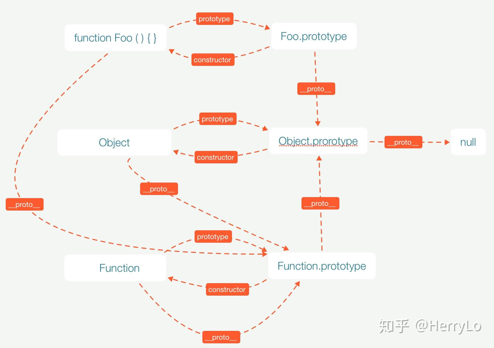

Swift React Dart Go
Rust Python
Don't be addicted to technology
Products are more important than tools and programming languages
Love💕 and life are even more important
信息的表示和处理
字节序
字节序 (Endianness) 面向 多字节数值类型 (Int16, Int32, Int64) 定义
- 小端(littleEndian): 多字节数值类型的数值低位存储在内存低位，小端易存取易计算，多用于存储
- 大端(bigEndian): 数值低位存储在内存高位，大端易阅读，多用于网络传输
// iOS字节序是小端
withUnsafeBytes(of: UInt32(0x01_02_03_04)) { p in
p.forEach { byte in
print(byte) // 4 3 2 1
}
}
// 转为大端
withUnsafeBytes(of: UInt32(0x01_02_03_04).bigEndian) { p in
p.forEach { byte in
print(byte) // 1 2 3 4
}
}
整数表示
| 整数类型 | 十进制 | 二进制 | 原码 | 反码 | 补码 | 计算机中实际的记录 |
|---|---|---|---|---|---|---|
| Int | 3 | 0011 | 0011 | |||
| Int | -3 | -0011 | 1011 | 1100 | 1101 | 1101 |
| UInt | 3 | 0011 | 0011 |
withUnsafeBytes(of: 3) { p in
print(String(p[0], radix: 2)) // 00000011
}
withUnsafeBytes(of: -3) { p in
print(String(p[0], radix: 2)) // 11111101
}
浮点数表示
| 浮点数类型 | 十进制 | 二进制 | 科学计数 | 阶数 | 尾数 | 计算机中实际的记录 |
|---|---|---|---|---|---|---|
| Float | 3.625 | 11.101 | 1.1101 * 2^1 | 1 + 01111111 | 1101 | 0100000001101 |
| Float | -3.625 | -11.101 | -1.1101 * 2^1 | 1 + 01111111 | 1101 | 1100000001101 |
| Double | 3.625 | 11.101 | 1.1101 * 2^1 | 1 + 01111111111 | 1101 | 0100000000001101 |
| Double | -3.625 | -11.101 | -1.1101 * 2^1 | 1 + 01111111111 | 1101 | 1100000000001101 |
withUnsafeBytes(of: Float(3.625)) { p in
print(String(UInt16(p[3]) << 8 + UInt16(p[2]), radix: 2)) // 0100000001101000
}
withUnsafeBytes(of: Float(-3.625)) { p in
print(String(UInt16(p[3]) << 8 + UInt16(p[2]), radix: 2)) // 1100000001101000
}
withUnsafeBytes(of: 3.625) { p in
print(String(UInt16(p[7]) << 8 + UInt16(p[6]), radix: 2)) // 0100000000001101
}
withUnsafeBytes(of: -3.625) { p in
print(String(UInt16(p[7]) << 8 + UInt16(p[6]), radix: 2)) // 1100000000001101
}
程序的机器级表示
条件分支
int abs(int a, int b) {
if (a > b) {
return a - b;
} else {
return b - a;
}
}
条件控制
_abs:
cmpl %esi, %edi
jle L2
movl %edi, %eax
subl %esi, %eax
ret
L2:
movl %esi, %eax
subl %edi, %eax
ret
条件传送
_abs:
movl %edi, %eax
subl %esi, %eax
movl %esi, %edx
subl %edi, %edx
cmpl %esi, %edi
cmovle %edx, %eax
ret
循环
do-while
int sum(int n) {
int res = 0;
do {
res += n;
n -= 1;
} while (n > 0);
return res;
}
_sum:
movl $0, %eax
LOOP:
addl %edi, %eax
subl $1, %edi
cmpl $0, %edi
jg LOOP
ret
while
int sum(int n) {
int res = 0;
while (n > 0) {
res += n;
n -= 1;
}
return res;
}
for
int sum(int n) {
int res = 0;
for (; n > 0; n--) {
res += n;
}
return res;
}
while 和 for循环jump to middle汇编实现
_sum:
movl $0, %eax
jmp TEST
LOOP:
addl %edi, %eax
subl $1, %edi
TEST:
cmpl $0, %edi
jg LOOP
ret
while 和 for循环guarded-do汇编实现
_sum:
movl $0, %eax
cmpl $0, %edi
jle DONE
LOOP:
addl %edi, %eax
subl $1, %edi
cmpl $0, %edi
jne LOOP
ret
DONE:
ret
值传递
#include <stdio.h>
int increased(int x) {
x += 1;
return x;
}
int main() {
printf("%d\n", increased(0));
return 0;
}
_increased:
movl %edi, %eax
addl $1, %eax
retq
.globl _main
_main:
pushq %rbp
movl $0, %edi
callq _increased
leaq L_.str(%rip), %rdi
movl %eax, %esi
callq _printf
movb $0, %al
popq %rbp
retq
L_.str:
.asciz "%d\n"
指针传递
#include <stdio.h>
void increase(int *x) {
*x += 1;
}
int main() {
int x = 0;
increase(&x);
printf("%d\n", x);
return 0;
}
_increase:
addl $1, (%rdi)
retq
.globl _main
_main:
pushq %rbp
movq %rsp, %rbp
subq $16, %rsp
movl $0, -8(%rbp)
leaq -8(%rbp), %rdi
callq _increase
leaq L_.str(%rip), %rdi
movl -8(%rbp), %esi
callq _printf
movb $0, %al
addq $16, %rsp
popq %rbp
retq
L_.str:
.asciz "%d\n"
局部变量
int function() {
int a = 1;
int b = 2;
int c = 3;
return a + b + c;
}
_function:
pushq %rbp
pushq %rbx
movl $1, %ebp
movl $2, %ebx
movl $3, %eax
addl %ebp, %eax
addl %ebx, %eax
popq %rbx
popq %rbp
retq
递归
int fibonacci(int n) {
if (n == 0) {
return 1;
}
if (n == 1) {
return 1;
}
return fibonacci(n - 1) + fibonacci(n - 2);
}
_fibonacci:
pushq %rbp
pushq %rbx
cmpl $0, %edi
jne L2
movl $1, %eax
popq %rbx
popq %rbp
ret
L2:
cmpl $1, %edi
jne L3
movl $1, %eax
popq %rbx
popq %rbp
ret
L3:
movl %edi, %ebp
subl $1, %edi
callq _fibonacci
movl %eax, %ebx
movl %ebp, %edi
subl $2, %edi
callq _fibonacci
addl %ebx, %eax
popq %rbx
popq %rbp
ret
数组
#include <stdio.h>
int subscript_get(int *a, int i) {
return a[i];
}
void subscript_set(int *a, int i, int x) {
a[i] = x;
}
int main() {
int a[5];
subscript_set(a, 3, 3);
printf("%d\n", subscript_get(a, 3));
return 0;
}
_subscript_get:
movl (%rdi,%rsi,4), %eax
retq
_subscript_set:
movl %edx, (%rdi,%rsi,4)
retq
.globl _main
_main:
pushq %rbp
movq %rsp, %rbp
pushq %rbx
subq $40, %rsp
leaq -48(%rbp), %rdi
movl $3, %esi
movl $3, %edx
callq _subscript_set
movl $3, %esi
callq _subscript_get
leaq L_.str(%rip), %rdi
movl %eax, %esi
callq _printf
movb $0, %al
addq $40, %rsp
popq %rbx
popq %rbp
retq
L_.str:
.asciz "%d\n"
结构体
#include <stdio.h>
struct T {
int i;
char c;
int a[3];
char *s;
};
int main() {
struct T t = {1, 'c', {0, 1, 2}, "hello"};
printf("%d, %c, %d, %s\n", t.i, t.c, t.a[0], t.s);
return 0;
}
.globl _main
_main:
pushq %rbp
movq %rsp, %rbp
subq $48, %rsp
movq l___const.main.t(%rip), %rax
movq %rax, -40(%rbp)
movq l___const.main.t+8(%rip), %rax
movq %rax, -32(%rbp)
movq l___const.main.t+16(%rip), %rax
movq %rax, -24(%rbp)
movq l___const.main.t+24(%rip), %rax
movq %rax, -16(%rbp)
movl -40(%rbp), %esi
movsbl -36(%rbp), %edx
movl -32(%rbp), %ecx
movq -16(%rbp), %r8
leaq L_.str.1(%rip), %rdi
callq _printf
movb $0, %al
addq $48, %rsp
popq %rbp
retq
L_.str:
.asciz "hello"
.section __DATA,__const
l___const.main.t:
.long 1
.byte 99
.space 3
.long 0
.long 1
.long 2
.space 4
.quad L_.str
L_.str.1:
.asciz "%d, %c, %d, %s\n"
优化程序性能
将无需重复执行的代码移出循环
优化前
let str = String(repeating: "a", count: 10_0000)
var i = 0
while i < strlen(str) {
i += 1
}
优化后
优化前每次循环都会执行一次strlen()，优化后将只需执行一次的strlen()移出循环； 而for-in与while不同，strlen()执行一次生成迭代器之后就不再执行strlen()
let len = strlen(str)
var i = 0
while i < len {
i += 1
}
for i in 0..<strlen(str) {
}
将频繁的内存引用合并为一次内存引用
优化前
long *d = malloc(sizeof(long));
int *a = malloc(sizeof(int) * 100000);
for (int i = 0; i < 100000; i++) {
a[i] = i;
}
for (int i = 0; i < 100000; i++) {
*d += a[i];
}
优化后
long t = 0;
for (int i = 0; i < 100000; i++) {
t += a[i];
}
*d = t;
循环展开
优化前
优化后
int i;
for (i = 0; i < 100000 - 1; i+=2) {
*d += (a[i] + a[i+1]);
}
for (; i < 100000; i++) {
*d += a[i];
}
存储器层次结构
局部性
局部性良好高速缓存友好
let a = [[Int]](repeating: [Int](0..<10_0000), count: 10_0000)
var sum = 0
for i in 0..<10_0000 {
for j in 0..<10_0000 {
sum += a[i][j]
}
}
局部性差高速缓存不友好
访问完一个子数组之后再访问下一个子数组称为行优先；访问完所有子数组的第一个元素后再访问第二个元素称为列优先。行优先局部性好，在访问子数组的某个元素后，邻近的元素会被从内存加载到高速缓存中，接下来几次内存引用都会缓存命中；列优先局部性差，在访问子数组的某个元素后，跳到下一个子数组访问某个元素，缓存不命中需要直接访问内存
var sum = 0
for j in 0..<10_0000 {
for i in 0..<10_0000 {
sum += a[i][j]
}
}
链接
链接可重定位目标文件
hello.c
#include <stdio.h>
void hello(void) {
printf("hello\n");
}
main.c
void hello(void);
int main() {
hello();
return 0;
}
- 生成可重定位目标文件
clang -c main.c hello.c - 链接
SDK=`xcrun --show-sdk-path -sdk macosx` ld main.o hello.o -lSystem -L $SDK/usr/lib
链接静态库
- 生成可重定位目标文件
clang -c main.c hello.c - 生成静态库
ar rcs libhello.a hello.o - 链接
SDK=`xcrun --show-sdk-path -sdk macosx` ld main.o -lhello -L. -lSystem -L $SDK/usr/lib
链接动态库
- 生成动态库（共享目标文件）
clang -shared -fpic -o libhello.so hello.c - 链接
SDK=`xcrun --show-sdk-path -sdk macosx` ld main.o -lhello -L. -lSystem -L $SDK/usr/lib
运行时加载动态库
import Foundation
let handle = dlopen("./libhello.so", RTLD_LAZY)
if let hello = dlsym(handle, "hello") {
let hello = unsafeBitCast(hello, to: (@convention(c) () -> Void).self)
hello()
dlclose(handle)
}
打桩
编译时打桩
// myabs.c
#include <stdlib.h>
#include <stdio.h>
int myabs(int x) {
printf("called abs\n");
return abs(x);
}
// stdlib.h
#define abs(x) myabs(x)
int myabs(int x);
// main.c
#include <stdlib.h>
#include <stdio.h>
int main() {
int x = abs(-1);
printf("%d\n", x);
return 0;
}
clang -c myabs.cclang -I. main.c myabs.o
异步编程
背景概念
处理器(Central Processing Unit)
任务调度
-
线程(Thread)
- 线程是进程的一部分
- 多线程间共享进程资源
-
进程(Process)
- 进程由多个线程组成
- 多进程间资源独立
并发(Concurrency)
- 并发指逻辑结构
- 多任务中的每一任务无需等待上一个任务完成才能开始
- 多个任务不一定同时执行
- 异步编程无需关心程序执行状态是否并行，只需要设计出逻辑结构是并发的程序即可
并行(Parallelism)
- 并行指执行状态
- 多个任务同时执行
- 多核处理器可能并行执行并发程序；单核处理器进行多任务轮转造成并发程序并行执行的假象
数据竞争
设计模式
1. 观察者模式
class Subject {
var state = 0
var observers = [Observer]()
func append(observer: Observer) {
observers.append(observer)
}
func remove(observer: Observer) {
observers.removeAll(where: { $0 === observer })
}
func notify() {
observers.forEach({ $0.update(subject: self)} )
}
}
protocol Observer: class {
func update(subject: Subject)
}
class ObserverA: Observer {
func update(subject: Subject) {
print("A", subject.state)
}
}
class ObserverB: Observer {
func update(subject: Subject) {
print("B", subject.state)
}
}
let subject = Subject()
let observerA = ObserverA()
let observerB = ObserverB()
subject.append(observer: observerA)
subject.append(observer: observerB)
subject.state = 1
subject.notify()
// print: A 1
// B 1
subject.remove(observer: observerA)
subject.state = 2
subject.notify()
// print: B 2
词法结构
注释
// 注释
/*
多行注释
*/
标识符
let 中文 = "也可用作标识符"
let 😄 = "甚至emoji也可以"
let `class` = "保留关键字做标识符需要加反引号"
关键字
声明关键字
associatedtype, class, deinit, enum, extension, fileprivate, fun, import, init, inout, internal, let, open, operator, private, precedencegroup, protocol, public, rethrows, static, struct, subscript, typealias, var
语句关键字
break, case, catch, continue, default, defer, do, else, fallthrough, for, guard, if, in, repeat, return, throw, switch, where, while
表达式和类型关键字
Any, as, catch, false, is, nil, rethrows, self, Self, super, throw, throws, true, try
模式关键字
_
以#开头的关键字
#available, #colorLiteral, #column, #dsohandle, #elseif, #else, #endif, #error, #fileID, #fileLiteral, #filePath, #file, #function, #if, #imageLiteral, #keyPath, #line, #selector, #sourceLocation, #warning
仅特定环境保留关键字（在环境外可以用作标识符）
associativity, convenience, didSet, dynamic, final, get, indirect, infix, lazy, left, mutating, none, nonmutating, optional, override, postfix, precedence, prefix, Protocol, required, right, set, some, Type, unowned, weak, willSet
字面量
33 // 整数字面量
3.1415926 // 浮点数字面量
"Hello, world!" // 字符串字面量
true // 布尔值字面量
nil // 空字面量
整数字面量
0b11111111 // 二进制整数字面量
0o377 // 八进制整数字面量
0xFF // 十六进制整数字面量
-42 // 负整数字面量
1_000_000 // 以下划线隔开更易读的整数字面量
浮点数字面量
1.25e2 // 科学计数法浮点数字面量
1.25e-2
0x1p2 // 十六进制科学计数法浮点数字面量
-42.5 // 负浮点数字面量
-1.000_1 // 以下划线隔开更易读的浮点数字面量
字符串字面量
"字符串"
"""
多行字符串
"""
let x = "world"
"Hello, \(x)!" // 字符串插值
#"\"# // 真实值字符串字面量，显示真实字符而非转义后的字符
"Hello, " + "world!" // 字符串连接（在编译时进行连接）
运算符
类型
命名类型和复合类型
命名类型包含内置类型和自定义类型
复合类型包含函数类型和元组类型
类型标注
let x: Int = 1 // 显式指定变量类型
类型标识符
类型标识符指代命名类型或命名类型和复合类型的别名
Int // Int指代Int类型
typealias Point = (Int, Int) // Point指代(Int, Int)类型的别名
元组类型
let point: (Int, Int) = (3, 3)
point.0
point.1
let point: (x: Int, y: Int) = (3, 3)
point.x // 命名元组中的元素，用名称来指代元素
point.y
func getPosition() -> (Int, Int) {
(3, 3) // 函数多返回值
}
let pos = getPosition()
let (x, y) = getPosition()
Void // 空元组 typealias Void = ()
函数类型
函数类型表示函数、方法或闭包的类型
let closure: (Int) -> Void
let closure: (_ x: Int) -> Void
func sum(_ number: Int...) -> Int { // 可变参数
return number.reduce(0, +)
}
print(sum(0, 1, 2, 3)) // 6
func increase(_ variable: inout Int) { // 输入输出参数
variable += 1
}
var variable = 0
increase(&variable)
print(variable) // 1
func addTo(_ adder: Int) -> (Int) -> Int { // 返回值为函数类型
return { num in
adder + num
}
}
let addToOne = addTo(1)
let addToTwo = addTo(2)
print(addToOne(10)) // 11
print(addToTwo(10)) // 12
func makeError() throws -> Int { // 抛出异常
0
}
try makeError()
数组类型
let array: [Int] = []
let array: Array<Int> = []
let array = [Int]()
字典类型
let dictionary: [String: String] = [:]
let dictionary: Dictionary<String, String> = [:]
let dictionary = [String: String]()
可选类型
let option: Int? = nil
let option: Optional<Int> = nil
let option = Int?(nil)
隐式展开可选类型
let option: Int! = nil
let unwrapped: Int = option // Fatal error: Unexpectedly found nil while implicitly unwrapping an Optional value
协议组合类型
typealias Codable = Decodable & Encodable
不透明类型
不透明类型可以理解为反向范型，范型是由调用者来决定具体类型，不透明类型是由实现来决定具体类型
不透明类型抛弃了协议的动态性，编译时就确定其具体类型
protocol View {
associatedtype Body
var body: Body { get }
}
struct AnyView<V>: View {
typealias Body = V
let view: V
var body: Body {
view
}
}
func draw() -> some View {
AnyView(view: "Hello, world!")
}
元类型
let x: Int = 1
let type: Int.Type = Int.self
任意类型
let x: Any = 1
if let x = x as? Int {
}
自身类型
struct Car {
static func create() -> Self {
return Car()
}
func start() {
Self.create()
}
func run() {
self.start()
let car: Self = self
let type: Self.Type = Self.self
}
}
类型继承子句
class View: UIView, UICollectionViewDelegate, UITableViewDelegate, UITextViewDelegate {
}
enum Network: String {
case wifi = "en0"
case cellular = "pdp_ip0"
}
类型推断
let x = 1
表达式
前缀表达式
输入输出表达式
func increase(_ variable: inout Int) {
variable += 1
}
var variable = 0
increase(&variable) // 输入输出表达式
print(variable) // 1
try 运算符
func makeError() throws -> Int {
throw NSError()
}
func getResult() throws -> Int {
try makeError()
}
let result: Int? = try? makeError() // nil
let result: Int = try! makeError() // EXC_BAD_INSTRUCTION
await 运算符
func hello() async -> Int {
await Task.sleep(1_000_000_000)
return 1
}
Task {
let n = await hello()
}
二元表达式
赋值表达式
let x = 1
let (a, b) = (3, 3)
条件运算符
let bool = [0, 1].randomElement()! == 1 ? true : false
类型转换运算符
let string = NSString(string: "abc")
let object = string as NSObject // 向上转换
let str = object as? NSString // 向下转换
let num = object as? NSNumber // nil
let num = object as! NSNumber // signal SIGABRT
let string = "String"
let nsString = NSString(string: "NSString")
let nsStr: NSString = string as NSString // Swift标准库类型与Foundation基础库类型的桥接
let str: String = nsString as String
let nsStr: NSString = NSString(string: string)
let str: String = String(nsString)
基本表达式
字面量表达式
#file
#filePath
#fileID
#line
#column
#function
#dsohandle
[0, 1, 2, 3]
["a": 1, "b": 2]
self表达式
struct SomeStruct {
func instanceMethod() {
// 在实例方法中self指代当前实例
self.instanceMethod()
}
static func staticMethod() {
// 在静态方法中self指代当前类型，与Self相同
self.staticMethod()
Self.staticMethod()
}
}
struct SomeStruct {
var property: Int
init(property: Int) {
self.property = property
}
init() {
self.init(property: 1)
}
}
super表达式
class Super {
init() {
}
}
class Child: Super {
override init() {
super.init()
}
}
闭包表达式
func closure(block: (Int, Int) -> Int) {
block(1, 2)
}
closure { (x, y) -> Int in
return x + y
}
closure { x, y in
x + y
}
closure {
$0 + $1
}
捕获列表
var a = 0
var b = 0
let closure = { [a] in
print(a, b)
}
a = 1
b = 1
closure() // 0 1
class ReferenceInt {
var value = 0
}
let a = ReferenceInt()
let b = ReferenceInt()
let closure = { [a] in
print(a.value, b.value)
}
a.value = 1
b.value = 1
closure() // 1 1
class Strong {
var closure: () -> Void = {}
init() {
closure = { // [self] in
print(self.closure)
}
}
deinit {
print(self)
}
}
class Weak {
var closure: () -> Void = {}
init() {
closure = { [weak self] in
print(self?.closure)
}
}
deinit {
print(self)
}
}
var a: Strong? = Strong()
var b: Weak? = Weak()
a = nil
b = nil // 只有Weak被释放了
隐式成员表达式
let zero = Int.zero
let zero: Int = .zero
括号表达式
extension String {
var firstLetterUppercased: String {
// 使用括号更改默认优先级的符号运算顺序
(first?.uppercased() ?? "") + dropFirst()
}
}
元组表达式
(3, 3)
(x: 3, y: 3)
通配符表达式
let (x, _) = (3, 3)
func closure(block: (Int, Int) -> Void) -> Int {
1
}
_ = closure { x, _ in
}
Key-Path表达式
"Hello, world!"[keyPath: \String.count]
var index = 0
let path = \[Int].[index]
print([0, 1, 2][keyPath: path]) // 0
index += 1
print([0, 1, 2][keyPath: path]) // 0
struct Task {
var done: Bool
}
let todoList = [
Task(done: true),
Task(done: false)
]
let doneTasks = todoList.filter(\.done)
Selector表达式
class SomeClass {
@objc let property = 0
@objc func method() {
}
}
let selectorForProperty = #selector(getter: SomeClass.property)
let selectorForMethod = #selector(SomeClass.method)
Key-Path字符串表达式
class SomeClass: NSObject {
@objc let property = 0
}
let keyPathString = #keyPath(SomeClass.property) // "property"
let value = SomeClass().value(forKey: keyPathString)
后缀表达式
函数调用表达式
func someFunction(_ x: Int) {
}
func someFunction(x: Int) {
}
someFunction(0)
someFunction(x: 1)
func someFunction(completion: () -> Void) {
}
someFunction(completion: {
})
someFunction() {
}
someFunction {
}
func someFunction(x: Int, success: () -> Void, failure: () -> Void) {
}
someFunction(x: 1, success: {
}, failure: {
})
someFunction(x: 1) {
} failure: {
}
隐式转换为指针类型
var a = 0
func implicit(pointer: UnsafePointer<Int>) {
}
withUnsafePointer(to: &a) { pointer in
}
implicit(pointer: &a) // inout输入输出参数隐式转换为UnsafePointer或UnsafeMutablePointer指针类型
初始化器表达式
let zero = Int()
let zero = Int.init()
let metaType = Int.self
let zero = metaType.init()
let stringArray = [0, 1, 2].map(String.init)
let stringArray = [0, 1, 2].map { String($0) }
显示成员表达式
struct SomeStructure {
func someMethod(x: Int) {}
func someMethod(y: Int) {}
func overloadedMethod(x: Int) {}
func overloadedMethod(x: Bool) {}
}
let instance = SomeStructure()
let method = instance.someMethod(x:)
let overloadedMethod: (Int) -> Void = instance.overloadedMethod(x:)
后缀self表达式
let number: Int = 1.self
let metaType: Int.Type = Int.self
下标表达式
var array = [0, 1, 2]
array[0] = array[1]
强制取值表达式
var x: Int? = 0
x! += 1
let unwrapped = x!
可选链表达式
let string: String? = "Hello, world!"
print(string?.first?.lowercased()) // Optional("h")
语句
循环语句
For-In 循环
for i in 0..<3 {
print(i)
}
步长不为一或倒序
for i in stride(from: 0, to: 10, by: 2) {
print(i) // 0 2 4 6 8
}
While 循环
var i = 0
while i < 3 {
print(i)
i += 1
}
Repeat-While 循环
// while第一次判断条件不满足直接不执行
// repeat while即使第一次判断条件不满足也会至少执行一次
var i = 0
repeat {
print(i)
i += 1
} while i < 3
分支语句
if 语句
func someMethod(x: Int) {
if x > 1 {
} else if x > 0 {
} else {
}
}
// 可选绑定
if let zero = Int("0") {
}
let result = Result<Int, NSError>.success(1)
// case 模式匹配
if case let .success(x) = result {
print(x)
}
let dualOption: Int?? = 1
if case let x?? = dualOption {
print(x)
}
guard 语句
func someMethod(x: Int) {
guard x > 0 else { return }
}
func someMethod() {
guard let zero = Int("0") else { return }
}
switch 语句
switch UIDevice.current.userInterfaceIdiom {
case .mac:
print("mac")
case .phone:
print("phone")
case .pad:
print("pad")
default:
break
}
func someMethod(string: String) {
if string.hasPrefix("a") {
print("a")
} else if string.hasPrefix("b") {
print("b")
} else if string.hasPrefix("c") {
print("c")
} else {
print("unknown")
}
}
// case let where 模式匹配替换if else
func someMethod(string: String) {
switch string {
case let string where string.hasPrefix("a"):
print("a")
case let string where string.hasPrefix("b"):
print("b")
case let string where string.hasPrefix("c"):
print("c")
default:
print("unknown")
}
}
带标签的语句
label: if true {
while true {
if true {
print("inside")
break label
}
}
// break本应跳出while循环，break label指定了要跳出的标签，最终跳出了if语句
print("outside") // 将不会被执行
}
控制转移语句
while true {
break
}
for i in 0..<3 {
if i < 1 {
continue
}
print(i) // 1 2
}
func someMethod() {
return
}
func makeError() throws {
throw NSError()
}
defer 语句
func someMethod() {
let pointer = UnsafeMutablePointer<Int>.allocate(capacity: 1)
// defer 推迟到退出当前作用域之前执行
defer {
pointer.deallocate()
}
pointer.initialize(to: 0)
}
do 语句
do {
try String(contentsOfFile: "")
} catch let error {
print(error) // Error Domain=NSCocoaErrorDomain Code=258 "The item couldn’t be opened because the file name “” is invalid." UserInfo={NSFilePath=}
}
// 引入一个新的作用域，分隔代码块的界限，不会损失性能
do {
print("Hello, world!")
}
编译器控制语句
条件编译代码块
#if os(iOS) || os(tvOS)
import UIKit
#elseif os(macOS)
import AppKit
#elseif os(watchOS)
import WatchKit
#elseif os(Linux) || os(Windows)
#else
#endif
#if arch(i386) || arch(x86_64)
#elseif arch(arm) || arch(arm64)
#endif
#if swift(>=5)
#endif
#if compiler(>=5)
#endif
#if canImport(SwiftUI)
import SwiftUI
#endif
#if targetEnvironment(simulator)
#elseif targetEnvironment(macCatalyst)
#endif
行控制语句
#sourceLocation(file: "name", line: 1)
print(#file, #line) // name 2
#sourceLocation()
print(#file, #line) // 文件名和行号被重置
编译时诊断语句
#error("错误")
#warning("警告")
可用性条件
if #available(iOS 13.0, *) {
}
声明
顶级代码
print("Hello, world!")
代码块
do {
}
导入声明
import Foundation
import Foundation.NSObject
import struct Foundation.CGFloat
import class Foundation.NSObject
常量声明
let zero = 0
let zero: Int = 0
变量声明
存储变量和存储属性
var x = 1
var x: Int = 1
计算变量和计算属性
var number = 1
var opposite: Int {
get {
-number
}
set {
number = -newValue
}
// set(newNumber) {
// number = -newNumber
// }
}
print(opposite) // -1
opposite = 3
print(number) // -3
var bit = 8
var byte: Int {
bit / 8
// get {
// bit / 8
// }
}
存储变量观察器和存储属性观察器
var x = 0 {
willSet {
print("\(x) will set to \(newValue)")
}
didSet {
print("\(oldValue) did set to \(x)")
}
}
x = 1
// 0 will set to 1
// 0 did set to 1
类型的属性
struct SomeStructure {
static var x = 0
static var y: Int {
1
}
}
class SomeClass {
static var x = 0
static var y: Int {
1
}
}
class Super {
class var x: Int {
0
}
}
class Child: Super {
override class var x: Int {
1
}
}
类型别名声明
typealias Dict = Dictionary
typealias StringDict<Value> = Dictionary<String, Value>
let dict1: Dict<String, Int> = [:]
let dict2: StringDict<Int> = [:]
函数声明
参数名
func f(a: Int, b: Int) -> Int {
a + b
}
f(a: 0, b: 1)
func f(_ a: Int, x b: Int) -> Int {
a + b
}
f(0, x: 1)
输入输出参数
调用函数时，复制参数；在函数中，副本被修改；函数返回时，副本被赋值给原参数
var _x = 0
var x: Int {
get {
print("copy in")
return _x
}
set {
_x = newValue
print("copy out")
}
}
func f(x: inout Int) {
x = 1
print("copy is modified")
return
}
f(x: &x)
// copy in
// copy is modified
// copy out
var x = 0
// 捕获输入输出参数，不改变它
func f(x: inout Int) {
DispatchQueue.global().async { [x] in
print(x + 1)
}
}
// 捕获输入输出参数，并改变它
func f(x: inout Int) {
var local = x
defer {
x = local
}
let queue = DispatchQueue(label: "serial")
queue.async {
local += 1
}
queue.sync {}
}
特殊参数
func sum(_ number: Int...) -> Int { // 可变参数
return number.reduce(0, +)
}
print(sum(0, 1, 2, 3)) // 6
func printInt(_ value: Int = 0) {
print(value)
}
printInt() // 0
printInt(1) // 1
特殊方法
struct SomeStructure {
var x = 0
mutating func modify() {
x += 1
}
}
class Super {
func method() {
}
}
class Child: Super {
override func method() {
}
}
class SomeClass {
// Cannot override static method
static func typeMethod1() {
}
// Class method overrides a 'final' class method
final class func typeMethod2() {
}
// 允许子类重写
class func typeMethod3() {
}
}
特殊名称方法
struct AddTo {
var adder: Int
func callAsFunction(_ num: Int) -> Int {
adder + num
}
}
let addToOne = AddTo(adder: 1)
let addToTwo = AddTo(adder: 2)
print(addToOne(10)) // 11
print(addToTwo(10)) // 12
抛出异常的函数和方法
func makeError() throws -> Int {
throw NSError()
}
重抛异常的函数和方法
func rethrowError(block: () throws -> Void) rethrows {
try block()
}
// 函数将闭包内的异常再次抛出以交由外部处理
try? rethrowError {
throw NSError()
}
异步函数和方法
func hello() async -> Int {
try! await Task.sleep(nanoseconds: 1000_000_000)
return 1
}
let n = await hello()
永不返回的函数
func crash() -> Never {
fatalError("bad apple")
}
枚举声明
enum SomeEnumeration: Equatable {
case aCase
case withAssociatedValue(Int)
}
// 数值类型枚举默认rawValue值自动递增
enum RawIntEnumeration: Int {
case aCase = 10
case bCase // rawValue 11
}
// 字符串类型枚举默认rawValue值与标识符相同
enum RawStringEnumeration: String {
case aCase // rawValue "aCase"
case bCase // rawValue "bCase"
}
indirect enum LinkedNode {
case empty
case node(Int, LinkedNode)
}
let linkedList = LinkedNode.node(0, .node(1, .node(2, .empty)))
print(linkedList) // node(0, node(1, .node(2, .empty)))
结构体声明
struct SomeStructure {
}
类声明
class SomeClass {
}
参与者声明
actor SomeActor {
}
协议声明
protocol SomeProtocol {
associatedtype SomeType
var x: SomeType { get set}
func method()
subscript() -> Int { get set }
}
// 仅类可以实现的协议
protocol ClassOnlyProtocol: AnyObject {
}
初始化器声明
class Super {
var father: Int
// designated initializer
init(father: Int) {
self.father = father
}
}
class Child: Super {
var child: Int
override init(father: Int) {
child = 0
super.init(father: 0)
self.father = 1
}
// designated initializer
init(child: Int) throws {
self.child = child
super.init(father: 0)
father = 1
}
// convenience initializer
convenience init() throws {
try self.init(child: 1)
}
}
struct PositiveNumberString {
var value: String
// 可失败初始化器
init?(_ value: Int) {
guard value > 0 else { return nil }
self.value = String(value)
}
}
if let str = PositiveNumberString(-1) {
}
反初始化器声明
deinit {
}
扩展声明
protocol SomeProtocol {
}
struct SomeStructure {
}
extension SomeStructure: SomeProtocol {
}
protocol SomeProtocol {
func method()
}
extension SomeProtocol {
func method() {
}
}
struct SomeStructure {
}
extension SomeStructure: SomeProtocol {
}
protocol Serializable {
func serialize()
}
protocol SerializableInArray { }
extension Int: SerializableInArray { }
extension String: SerializableInArray { }
extension Array: Serializable where Element: SerializableInArray {
func serialize() {
}
}
下标声明
struct List {
var array: [Int]
subscript(index: Int) -> Int {
get {
array[index]
}
set {
array[index] = newValue
}
}
}
print(List(array: [0, 1, 2])[0]) // 0
运算符声明
postfix operator ++
prefix operator ++
infix operator ++
extension Int {
static postfix func ++(i: inout Int) {
i += 1
}
static prefix func ++(i: inout Int) {
i += 1
}
static func ++(left: Int, right: Int) -> Int {
left + right
}
}
var i = 0
i++
++i
print(i) // 2
print(1 ++ i) // 3
优先级组声明
precedencegroup 优先级组名称{
higherThan: 较低优先级组的名称
lowerThan: 较高优先级组的名称
associativity: 结合性
assignment: 赋值性
}
声明修饰符
class 修饰符表明是类自身的成员，而不是类实例的成员
dynamic 修饰由Objective-C Runtime动态派发的成员
final 限制类被继承，限制类成员被重写
lazy 修饰的属性第一次被访问时，计算和存储一次
optional 修饰@objc协议的可选成员
required 修饰的初始化器子类必须实现
static 修饰类型成员，而不是类实例成员，且不允许子类重写
unowned 无主引用
weak 弱引用
访问控制级别
private
fileprivate
internal
public
open
特性
available
@available(iOS 13.0, *)
@available(iOSApplicationExtension, unavailable)
@available(swift 5)
@available(iOS, introduced: 13.0) // is only available in iOS 13.0 or newer
@available(iOS, deprecated: 13.0) // is deprecated: deprecated
@available(iOS, obsoleted: 13.0) // is unavailable in iOS
@available(*, deprecated, message: "deprecated")
@available(*, unavailable, renamed: "newname") // has been renamed to 'newname'
discardableResult
@discardableResult
func someFunction() -> Int {
1
}
someFunction()
dynamicCallable
import JavaScriptCore
@dynamicCallable
struct JSFunctionWrapper {
let value: JSValue
func dynamicallyCall(withArguments args: [Any]) -> JSValue {
value.call(withArguments: args)
}
func dynamicallyCall(withKeywordArguments pairs: [String: Any]) -> JSValue {
value.call(withArguments: [pairs["a"]!, pairs["b"]!])
}
}
let context: JSContext = JSContext()
context.evaluateScript(
"""
function sum(a, b) {
return a + b
}
"""
)
let sumValue: JSValue = context.evaluateScript("sum")
let sum = JSFunctionWrapper(value: sumValue)
print(sum(1, 2)) // 3
print(sum(a: 1, b: 2)) // 3
dynamicMemberLookup
@dynamicMemberLookup
struct DynamicDict {
let dict: [String: Int]
subscript(dynamicMember key: String) -> Int? {
dict[key]
}
}
let dict = DynamicDict(dict: ["a": 1])
print(dict.a) // Optional(1)
print(dict.b) // nil
frozen
冻结对枚举的case和结构体的存储属性进行添加、删除、重新排序的操作，以保证发布二进制库的ABI兼容
main
@main
struct Main {
static func main() {
print("Hello, world!")
}
}
nonobjc
@objcMembers
public class OCBridge: NSObject {
@nonobjc public func onlyInSwift() {
}
}
objc
public class OCBridge: NSObject {
@objc func compatibleMethod() {
}
@objc(ocMethod)
func swiftMethod() {
}
}
objcMembers
@objcMembers
public class OCBridge: NSObject {
}
propertyWrapper
@propertyWrapper
struct UserDefault<T> {
let key: String
let defaultValue: T
init(wrappedValue defaultValue: T, _ key: String) {
self.key = key
self.defaultValue = defaultValue
}
var wrappedValue: T {
get {
UserDefaults.standard.object(forKey: key) as? T ?? defaultValue
}
set {
UserDefaults.standard.set(newValue, forKey: key)
}
}
var projectedValue: T? {
UserDefaults.standard.object(forKey: key) as? T
}
}
struct AppConfig {
@UserDefault("hasAppLaunchedOnce") static var hasAppLaunchedOnce: Bool = false
}
var isFirstLaunch: Bool {
if AppConfig.hasAppLaunchedOnce {
return false
}
AppConfig.hasAppLaunchedOnce = true
return true
}
print(isFirstLaunch) // true false
print(AppConfig.hasAppLaunchedOnce) // false true
print(AppConfig.$hasAppLaunchedOnce) // Optional(false) Optional(true)
resultBuilder
@resultBuilder struct Paragraph {
static func buildBlock(_ sentences: String...) -> String {
sentences.joined(separator: "\n")
}
}
@Paragraph
func makeParagraph() -> String {
"resultBuilder"
"hello"
"world"
}
print(makeParagraph())
// resultBuilder
// hello
// world
Swift 5.6
不可用条件
if #available(iOS 13, *) {} else {
}
if #unavailable(iOS 13) {
}
类型占位符
let x: _? = 1
let dict: [String: _] = ["a": 1]
临时未初始化的缓冲区
// 堆上分配
let pointer = UnsafeMutableBufferPointer<Int>.allocate(capacity: 3)
pointer.deallocate()
// 栈上分配
withUnsafeTemporaryAllocation(of: Int.self, capacity: 3) { pointer in
}
放宽 C 函数指针参数的诊断
UnsafeMutableRawPointer 可以自动转化为 UnsafeMutabelPointer<UInt8>
引入存在any
protocol P {
}
let p: P
let p: any P
具体实例
临时未初始化的缓冲区
import CommonCrypto
let data = "Hello, world!".data(using: .utf8)!
let digest: Data = data.withUnsafeBytes { dataPointer in
withUnsafeTemporaryAllocation(of: UInt8.self, capacity: Int(CC_MD5_DIGEST_LENGTH)) { digestPointer in
CC_MD5(dataPointer.baseAddress, CC_LONG(data.count), digestPointer.baseAddress)
return Data(buffer: digestPointer)
}
}
print(digest.reduce("", { partialResult, code in
partialResult + String(format: "%02x", code)
}))
放宽 C 函数指针参数的诊断
import CommonCrypto
let data = "Hello, world!".data(using: .utf8)!
var digest = [UInt8](repeating: 0, count: Int(CC_MD5_DIGEST_LENGTH))
data.withUnsafeBytes { dataPointer in
digest.withUnsafeMutableBytes { digestPointer in
// CC_MD5(dataPointer.baseAddress, CC_LONG(data.count), digestPointer.baseAddress?.assumingMemoryBound(to: UInt8.self))
CC_MD5(dataPointer.baseAddress, CC_LONG(data.count), digestPointer.baseAddress)
}
}
print(digest.reduce("", { partialResult, code in
partialResult + String(format: "%02x", code)
}))
数据结构
1. 数据存储(物理)结构
-
顺序
把逻辑上相邻的结点按顺序存储在物理上相邻的连续存储单元中，结点逻辑关系由存储单元的邻接关系体现。查找快，插入、删除慢。
-
链式
用一组任意的存储单元存储逻辑上相邻的结点（存储单元可以连续也可以不连续），逻辑关系记录在指针域中。查找慢，插入、删除快。
-
哈希(散列)
根据存储数据的内容计算哈希值来决定存储地址，根据内容查找时快
-
索引
另外设置一个索引表来存储结点的地址，分开存放数据结点和结点逻辑关系
2. 数据逻辑结构
-
集合
无序、不重复的元素构成集合
-
线性
具有唯一前驱和唯一后继的“一对一”关系的有序线性结构
-
树形
具有唯一前驱但可以有一个或多个后继的“一对多”关系的树形结构
-
图形
具有多个前驱和多个后继的“多对多”关系的图形结构
3. 表、堆、栈和队列
-
表
具有线性逻辑结构的就是线性表简称表，线性表又根据不同的物理实现方式分为：顺序表、链表。
-
堆
堆是一种经过排序的树形结构。根结点最大的，父结点比子结点大的叫最大堆；根结点最小的叫最小堆。
-
栈
栈是只允许在栈顶进行插入和删除操作的特殊线性表，栈又根据不同的物理实现方式分为：顺序栈、链式栈。具有“后进先出”的特性
-
队列
队列是只允许在队尾插入，在队首删除的特殊线性表，队列又根据不同的物理实现方式分为：顺序队列、链式队列。具有“先进先出”的特性
4. 二叉树的深度
当前结点的深度为左右子树深度较大的值+1
class BinaryTreeNode<T> {
var data: T
var left: BinaryTreeNode?
var right: BinaryTreeNode?
init(_ data: T, _ left: BinaryTreeNode? = nil, _ right: BinaryTreeNode? = nil) {
self.data = data
self.left = left
self.right = right
}
}
func depth<T>(_ node: BinaryTreeNode<T>?) -> Int {
guard let node = node else { return 0 }
let left = depth(node.left) + 1
let right = depth(node.right) + 1
return left > right ? left : right
}
算法
1. 时间复杂度
-
时间频度
算法中语句执行次数称为时间频度，记为T(n)
-
时间复杂度 O(n)
2. 空间复杂度
评估执行程序所需要的存储空间
3. 排序算法
这里都按从小到大的 < 顺序来排列
-
冒泡
一次比较两个相邻元素，大的换到后面；遍历重复，确保也只能确保最后一个元素是最大的，前面除最后一个元素外仍可能是乱序； 舍弃最后一个重复以上步骤，确保倒数第二个是第二大，以此类推就能确保右侧都是已排序序列
func bubbleSort(_ array: inout [Int]) {
for i in 0..<array.count - 1 {
for j in 0..<array.count - 1 - i {
if array[j] > array[j+1] {
let temp = array[j+1]
array[j+1] = array[j]
array[j] = temp
//array.swapAt(j, j+1)
}
}
}
}
-
选择
在右侧未排序序列中遍历找到最小元素，让其和未排序序列最前的元素交换，即追加到左侧已排序序列的末尾；重复以上步骤，每次在 剩下的未排序元素中找到最小的追加到已排序序列的末尾
func selectionSort(_ array: inout [Int]) {
for i in 0..<array.count {
var minIndex = i
for j in i..<array.count {
if array[j] < array[minIndex] {
minIndex = j
}
}
let temp = array[i]
array[i] = array[minIndex]
array[minIndex] = temp
}
}
-
插入
在右侧未排序序列中选择最前的元素，让其和左侧已排序序列中元素从后到前遍历依次比较，一次比较两个相邻元素，小的换到前面； 重复以上步骤，每次在未排序序列中选择最前的元素插入到已排序序列的应有位置使其仍然是已排序的序列
func insertionSort(_ array: inout [Int]) {
for i in 0..<array.count {
for j in (0..<i).reversed() {
if array[j+1] < array[j] {
let temp = array[j]
array[j] = array[j+1]
array[j+1] = temp
}
}
}
}
4. 查找算法
5. 反转
-
数组
前后两个指针分别指向开始和结尾，交换，接着前指针后移，后指针前移；直到两指针相遇（偶数个元素）或者前指针在后指针的后面（奇数个元素）， 也就是要保证前指针在后指针的前面，才可以进行循环
func reverse<T>(_ base: inout [T]) {
var start = 0
var end = base.count - 1
while start < end {
let temp = base[start]
base[start] = base[end]
base[end] = temp
start += 1
end -= 1
}
}
-
字符串
原理相同，只不过在swift中String不能直接进行下标访问，需要写一个extension
func reverse(_ string: inout String) {
var start = 0
var end = string.count - 1
while start < end {
let temp = string[start]
string[start] = string[end]
string[end] = temp
start += 1
end -= 1
}
}
extension String {
func index(_ i: Int) -> Self.Index {
self.index(self.startIndex, offsetBy: i)
}
subscript(_ i: Int) -> Character {
get {
self[self.index(i)]
}
set {
self.remove(at: self.index(i))
self.insert(newValue, at: self.index(i))
}
}
}
-
链表
设置一个新的头结点，遍历旧链表把每一个结点按顺序前插到新的链表中完成反转；使用可选项绑定来判空，首先临时保存当前结点的下一个结点， 将当前结点前插到新链表中时，next指向发生变化，所以必须先保存next；接着使current后移完成遍历，新头结点前移等待下一次前插；最终 新头结点为新链表的头结点
class LinkNode<T> {
var data: T
var next: LinkNode?
init(_ data: T, _ next: LinkNode? = nil) {
self.data = data
self.next = next
}
}
func reverse<T>(_ head: LinkNode<T>?) -> LinkNode<T>? {
var current = head
var newHead: LinkNode<T>? = nil
while let cur = current {
let temp = cur.next
cur.next = newHead
current = temp
newHead = cur
}
return newHead
}
6. 合并有序数组
使用两个指针分别指向两个数组，当两个指针都在数组范围内时，结果数组追加两个数组中更小的一个元素，追加了谁谁的指针就后移； 当两个指针中有一个溢出就不可再继续了，代码中数组访问会报错；分别使用两个循环追加剩下的元素，不用关心谁有剩余，谁有剩余谁追加，没有剩余循环就退出
func merge(_ array1: [Int], _ array2: [Int]) -> [Int] {
var p = 0
var q = 0
var result = [Int]()
while p < array1.count && q < array2.count {
if array1[p] <= array2[q] {
result.append(array1[p])
p += 1
} else {
result.append(array2[q])
q += 1
}
}
while p < array1.count {
result.append(array1[p])
p += 1
}
while q < array2.count {
result.append(array2[q])
q += 1
}
return result
}
7. 哈希计数查找
查找第一个只出现一次的元素，哈希计数，遍历输入的序列，如果元素是第一次出现就把它的计数设为1，如果不是第一次出现就计数+1； 重新遍历，第一次找到哈希计数为一次的就反回结果；输入的序列可以是字符串或数组，序列中的元素要遵循哈希协议，这里的哈希实现 使用字典；字典返回的为可选项，当字典中没有关键字对应的值时返回nil，可选项绑定判空来判断是否是第一次出现
func hashCount<T: Sequence>(_ sequence: T) -> T.Element? where T.Element: Hashable {
var dict = [T.Element: Int]()
for element in sequence {
guard let value = dict[element] else { dict[element] = 1; continue }
dict[element] = value + 1
}
for element in sequence {
if dict[element] == 1 {
return element
}
}
return nil
}
8. 用有序字典实现 LRU缓存
// 双向链表结点
class DoubleLinkedNode<Data> {
var data: Data?
var prev: DoubleLinkedNode?
var next: DoubleLinkedNode?
init(_ data: Data? = nil) {
self.data = data
self.prev = nil
self.next = nil
}
}
// 双向链表
// tips: 双向链表的优点主要在于删除快，不需要遍历一遍找到待删除结点的前一个结点
class DoubleLinkedList<Data> {
// 虚拟头尾结点
var head: DoubleLinkedNode<Data>
var tail: DoubleLinkedNode<Data>
// 链表结点个数
var count: Int
init() {
self.head = DoubleLinkedNode()
self.tail = DoubleLinkedNode()
self.head.next = self.tail
self.tail.prev = self.head
self.count = 0
}
// 在虚拟头结点之后插入新结点，即在链表的第一个位置插入结点
func insertFirst(_ newNode: DoubleLinkedNode<Data>) {
self.insert(newNode, after: self.head)
}
// 删除虚拟尾结点的前一个结点，即删除链表最后一个位置的结点，并返回结点的引用
func removeLast() -> DoubleLinkedNode<Data>? {
guard let last = tail.prev else { return nil }
self.remove(last)
return last
}
// 把某个结点移动到链表的第一个位置
func moveToFirst(_ node: DoubleLinkedNode<Data>) {
// 先删掉它，再在第一个位置插入
self.remove(node)
self.insertFirst(node)
}
// 在某个结点之后插入新的结点
func insert(_ newNode: DoubleLinkedNode<Data>, after prevNode: DoubleLinkedNode<Data>) {
guard let nextNode = prevNode.next else { return }
// 新结点的前指针指向新结点前面的结点，新结点后面的结点的前指针指向新结点
newNode.prev = prevNode
nextNode.prev = newNode
// 新结点的后指针指向新结点后面的结点，新结点前面的结点的后指针指向新结点
newNode.next = nextNode
prevNode.next = newNode
// 插入计数 + 1
self.count += 1
}
// 删除结点
func remove(_ node: DoubleLinkedNode<Data>) {
guard let prevNode = node.prev, let nextNode = node.next else { return }
// 待删除结点的后一个结点的前指针指向待删除结点的前一个结点，待删除结点的前一个结点的后指针指向待删除结点的后一个结点
nextNode.prev = node.prev
prevNode.next = node.next
// 删除计数 - 1
self.count -= 1
}
}
// 键值对
struct KeyValue<Key, Value> {
var key: Key
var value: Value
}
// 双向链表 + 哈希表
// 用哈希字典存储链表的结点引用，可以根据 key 键找到哈希字典中的链表结点引用进而找到链表中存储的 value 值
// 本来哈希字典是没有顺序的，与链表结合可以创造有序字典
class LinkedHashList<Key: Hashable, Value>: DoubleLinkedList<KeyValue<Key, Value>> {
// 哈希字典 [键: 结点引用]
var dict: [Key: DoubleLinkedNode<KeyValue<Key, Value>>]
override init() {
self.dict = Dictionary()
super.init()
}
subscript(key: Key) -> Value? {
// key -> node -> value
get {
guard let node = self.dict[key] else { return nil }
guard let data = node.data else { return nil }
return data.value
}
set {
// newValue 不为 nil 时
if let newValue = newValue {
// 已经有键时，修改链表结点的值
if let node = self.dict[key] {
node.data?.value = newValue
}
// 没有键时，新建结点，设置哈希字典键对应的结点索引，并把结点插入到链表的第一个位置
else {
let newNode = DoubleLinkedNode<KeyValue<Key, Value>>(KeyValue(key: key, value: newValue))
self.dict[key] = newNode
self.insertFirst(newNode)
}
}
// newValue 为 nil 时，删除哈希字典索引，并删除链表中的结点
else {
guard let node = self.dict[key] else { return }
self.dict[key] = nil
self.remove(node)
}
}
}
// 根据关键字，把某个结点移动到链表的第一个位置
func moveToFirst(key: Key) {
guard let node = self.dict[key] else { return }
self.moveToFirst(node)
}
// 删除链表最后一个位置的结点，并把删除哈希字典索引
func removeLast() {
guard let removedNode = super.removeLast() else { return }
guard let data = removedNode.data else { return }
self.dict[data.key] = nil
}
}
// Least Recently Used，最少使用缓存算法
// 设置缓存最大容量，当缓存到达最大容量时，删除最少使用的缓存
class LRUCache<Key: Hashable, Value>: LinkedHashList<Key, Value> {
// 容量
var capacity: Int
init(_ capacity: Int) {
self.capacity = capacity
}
// 获取缓存
func get(key: Key) -> Value? {
// 使用过移动到最前
self.moveToFirst(key: key)
return self[key]
}
// 设置缓存
func set(key: Key, value: Value) {
// 使用过移动到最前，如果新建结点，默认插入到最前所以不需要移动到最前
if let _ = self[key] {
self.moveToFirst(key: key)
}
self[key] = value
// 超出最大容量时，删除最后面的使用最少的缓存
if self.count > self.capacity {
self.removeLast()
}
}
}
Swift字符串算法特殊处理
避免String为兼容utf-8而产生的繁琐下标方法，以及因此带来的性能损失
var stringArray = [Character]("abc")
print(stringArray[0]) // a
Swift
1. copy
class A: NSCopying {
var a = 1
func copy(with zone: NSZone? = nil) -> Any {
let cp = A()
cp.a = a
return cp
}
}
let a = A()
let cp = a.copy() as! A
a.a = 2
print(a.a, cp.a)
2. mutating
struct A {
var a = 1
mutating func changeA() {
a = 2
}
}
var a = A()
a.changeA()
print(a.a)
3. 柯里化
func addTo(_ x: Int) -> (Int) -> Int {
return { y in
return x + y
}
}
let addTo3 = addTo(3)
addTo3(4)
addTo3(5)
4. 常用高阶函数
//map映射
let mapResult = [0,1,2,3].map { (i) -> String in
return "\(i)"
}
print(mapResult)//["0", "1", "2", "3"]
//compactMap丢弃nil映射
let compactMapResult = ["0","@","1","#","2","3"].compactMap { (s) -> Int? in
return Int(s)
}
print(compactMapResult)//[0, 1, 2, 3]
//filter过滤器
let filterResult = [0,1,2,3].filter { (i) -> Bool in
return i % 2 == 0
}
print(filterResult)//[0, 2]
//reduce合并
let reduceResult = [0,1,2,3].reduce(0) { (re, i) -> Int in
return re + i
}
print(reduceResult)//6
5. defer
延时执行，会在其所在作用域内所有语句执行完毕再执行 可以使得数据库连接、文件连接等关闭语句不一定非要写到作用域尾部，可以使用defer关键字和建立连接写到一起
func f() {
defer {
print(2)
}
print(1)
}
f()// 1\n 2\n
6. associatedtype
协议的泛型
protocol P {
associatedtype A
var p: A { get set }
func changeP() -> A
}
class C1: P {
typealias A = Int
var p: Int = 1
func changeP() -> Int {
p = 2
return p
}
}
class C2: P {
typealias A = String
var p: String = "a"
func changeP() -> String {
p = "b"
return p
}
}
let c1 = C1()
c1.changeP()
let c2 = C2()
c2.changeP()
7. final
限制继承和重写
//final限制继承
final class FinalClass {
}
//class SubClass: FinalClass {} //编译错误，无法继承final class
8. 访问控制
- open
- public
- internal
- file-private
- private
- open 在其它模块中可以访问和重写
- public 在其它模块中可以访问，但不可以重写
- internal 默认，在模块内部的多个文件内可以访问和重写
- file-private 在文件内部可以访问
- private 在类或结构体的内部可以访问
9. try! try?
//try! try?
func devide(_ a: Double, _ b: Double) throws -> Double {
enum DevideError: Error {
case ZeroError
}
guard b != Double(0) else {
throw DevideError.ZeroError
}
return a / b
}
print(try? devide(2, 1))//Optional(2.0)
//print(try! devide(2, 0)) //Fatal error崩溃退出
10. @autoclosure
//autoclosure把传进来的参数自动加上个闭包
func logIfTrue(_ predict: @autoclosure () -> Bool) {
if predict() {
print("True")
}
}
logIfTrue(2 > 1)
11. @escaping
import Foundation
// 逃逸闭包，在闭包所在的函数体执行完毕之后执行的闭包
func delay(callback: @escaping (Timer) -> Void) {
Timer(timeInterval: 1, repeats: false, block: callback).fire()
}
delay { _ in
print("escaping after 1 second")
}
12. @discardableResult
//在函数前加上@discardableResult，即使返回值没有被使用，编译器也不会提示
@discardableResult
func discardResult() -> Int {
return 1
}
discardResult()
13. 枚举关联值
enum Person {
case man(name:String)
case woman(name: String)
}
func whatName(_ person: Person) {
switch person {
case let .man(name: name):
print("man", name)
case let .woman(name: name):
print("woman", name)
}
}
whatName(.man(name: "1")) // man 1
whatName(.woman(name: "2")) // woman 2
14. 枚举封装
enum Week {
case Monday
case Tuesday
case Whitch(Int)
func printDay() {
switch self {
case .Monday:
print(1)
case .Tuesday:
print(2)
case .Whitch(let i):
print(i)
}
}
}
Week.Monday.printDay()
Week.Tuesday.printDay()
Week.Whitch(1).printDay()
15. 操作列表
//[.option1, .option2]
enum Option {
case option1
case option2
}
typealias Options = [Option]
func setOptions(_ options: Options) {
struct ParsedOptions {
var option1 = false
var option2 = false
init(_ options: Options) {
for op in options {
switch op {
case .option1:
option1 = true
case .option2:
option2 = true
}
}
}
}
print(ParsedOptions(options))
}
setOptions([.option1, .option2])
16. ??
//?? Optional默认值
let defaultNilValue = Int("@") ?? 0
print(defaultNilValue)
17. @propertyWrapper
// 用属性包装器来包裹
@propertyWrapper
struct AddOne {
private var x: Int
init() {
x = 0
}
var wrappedValue: Int {
get {
x + 1
}
set {
x = newValue
}
}
}
// 属性包装器不能写在模块顶层
struct Test {
@AddOne var addOne: Int
}
var test = Test()
print(test.addOne) // 1
test.addOne = 1
print(test.addOne) // 2
18. keyPath
struct A {
struct B {
struct C {
let value: String = "c"
}
let value: C = C()
}
let value: B = B()
var c: String {
get {
self[keyPath: \.value.value.value]
}
}
func keyPath(_ keyPath: KeyPath<A, String>) -> String {
return self[keyPath: keyPath]
}
}
let a = A()
a.value.value.value
let keyPath = \A.value.value.value
a[keyPath: keyPath]
a.keyPath(\.value.value.value)
a.c
19. 元素为值类型和引用类型的数组更改的区别
// 元素为值类型的数组只可以使用index更改数组
struct Value {
var property = 0
}
var valueArray: [Value] = .init(repeating: .init(), count: 3)
for index in 0..<valueArray.count {
valueArray[index].property += 1
}
dump(valueArray)
// 元素为引用类型的数组既可以使用index更改数组，又可以使用for-in循环更改数组
class Reference {
var property = 0
}
// 引用类型元素不可以使用Array(repeating:count:)来循环创建数组，否则创建出来的数组都是同一个引用
//var referenceArray: [Reference] = .init(repeating: .init(), count: 3)
var referenceArray: [Reference] = .init(AnyIterator(Reference.init).prefix(3))
for reference in referenceArray {
reference.property += 1
}
for index in 0..<referenceArray.count {
referenceArray[index].property += 1
}
dump(referenceArray)
20. 字典key和value同时映射
extension Dictionary {
func mapKeysAndValues<K, V>(_ transform: ((key: Key, value: Value)) throws -> (K, V)) rethrows -> [K: V] {
[K: V](uniqueKeysWithValues: try map(transform))
}
}
21. @_dynamicReplacement
class B {
dynamic func a() {
print("a")
}
}
extension B {
@_dynamicReplacement(for:a)
func c() {
print("b")
}
}
B().a()
22. 范型与协议共用时有可能会遇到丧失范型类型的情况
protocol P {
var a: Int { get }
}
extension P {
var a: Int {
0
}
}
struct T<M>: P {
}
extension T where M == Int {
var a: Int {
1
}
}
let t: P = T<Int>()
print(t.a) // 0 丧失类型T<Int>，变为P
print(T<Int>().a) // 1
protocol P {
var a: Int { get }
}
extension P {
var a: Int {
0
}
}
struct T: P {
var a: Int {
1
}
}
let t: P = T()
print(t.a) // 1 不会丧失类型
print(T().a) // 1
23. 切片slice是绝对索引而不是相对索引
print([0, 1, 2][1...].startIndex) // 1
print((1..<3).startIndex) // 1
print([0, 1, 2][1...][0]) // Fatal error: Index out of bounds
print((1..<3)[0]) // Fatal error: Index out of range
24. 类单例和结构体单例
class C {
static let shared = C()
var state = 0
}
struct T {
static var shared = T()
var state = 0
}
// 将shared赋值给其它变量的情况
let c = C.shared
c.state = 1
print(C.shared.state) // 1
var t = T.shared
t.state = 1
print(T.shared.state) // 0 没有改变
// 使用类名/结构体名直接调用的情况
C.shared.state = 2
T.shared.state = 2
print(C.shared.state) // 2
print(T.shared.state) // 2
25. Decimal解决浮点数运算比较问题
print((0.1 + 0.2) == 0.3) // false
print(Decimal(0.1) + Decimal(0.2) == Decimal(0.3)) // true
print(Double(truncating: (Decimal(0.1) + Decimal(0.2)) as NSNumber)) // 0.3
26. 库前缀名调用
public struct Reactive<Base> {
public let base: Base
init(_ base: Base) {
self.base = base
}
}
public protocol ReactiveCompatible {
associatedtype ReactiveBase
var rx: Reactive<ReactiveBase> { get }
}
extension ReactiveCompatible {
public var rx: Reactive<Self> {
Reactive(self)
}
}
String
1. str[0]
// 扩展字符串使它可以像其他语言一样以下标方式修改获取字符
extension String {
// String中的每个字符元素并不是等长的，而是由1~4个UTF-8组成，因此不能直接使用Int来索引
func index(_ i: Int) -> Index {
// 根据首索引和偏移计算出真实的索引
self.index(self.startIndex, offsetBy: i)
}
subscript(_ i: Int) -> Character {
set(newValue) {
self.remove(at: self.index(i))
self.insert(newValue, at: self.index(i))
}
get {
return self[self.index(i)]
}
}
}
2. split
// split分割
let sentence = "hello, my name is eric"
let words = sentence.split(separator: " ")
print(words)
3. join
// joined拼接
let words = ["hello,", "my", "name", "is", "liuzihao"]
let sentence = words.joined(separator: " ")
print(sentence)
4. contains
// 是否包含
"abc".contains("a")
5. 大小写
"abcd".uppercased()
"ABCD".lowercased()
6. unicode
"abcd".unicodeScalars.forEach { (unicode) in
print(unicode.value)
}
7. substring
// 前几位子字符串
"abcd".prefix(2)// ab
// 后几位子字符串
"accd".suffix(2)// cd
Swift String Length
String.count得到的是Unicode.Scalar按Unicode规则合成Character后，String中Character的个数。
"\r"和"\n"两个字符合成了新的单个字符"\r\n"，因此字符串长度为1
"\r\n".count // 1
strlen("\r\n") // 2
"\r\n".unicodeScalars.count // 2
("🇨" + "🇳") == "🇨🇳" // true
("🇨" + "🇳").count // 1
"🇨🇳".unicodeScalars.count // 2
使用utf8和C函数一起工作
strlen("你好") // 6
"你好".utf8.count // 6
使用utf16和Objective-C函数一起工作
NSString(string: "你好").length // 2
"你好".utf16.count // 2
utf8CString
strlen("abc") // 3 (长度不包含'\0')
"abc".utf8CString // [97, 98, 99, 0]
"abc".utf8CString.count // 4 (长度包含'\0')
contains的巨坑
引入Foundation之前，contains调用的是Swift标准库；引入之后，contains调用的是Foundation中NSString的方法。 Swift完全支持Unicode，而Objective-C只支持utf-16，造成了引入前后不一样的结果
"\r\n".contains("\n") // false
"🇨🇳".contains("🇨") // false
import Foundation
"\r\n".contains("\n") // true
"🇨🇳".contains("🇨") // true
Foundation
蛇形JSON解析自动转换为驼峰
struct Hello: Decodable {
var camelSnake: Int
}
let decoder = JSONDecoder()
decoder.keyDecodingStrategy = .convertFromSnakeCase
let hello = try! decoder.decode(Hello.self, from: "{\"camel_snake\": 1}".data(using: .utf8)!)
print(hello)
UIKit
1. UIView 和 CALayer
- UIView继承UIResponder，可以响应事件；
- CALayer用来绘制内容；
- UIView设置表现和位置时，内部实际是对所持有的layer的更改
2. Frame 和 Bounds
- 在width和height上frame和bounds没有什么区别
- frame设置控件在父控件坐标系中的位置；bounds更改控件自身的坐标系
- 默认坐标系是左上角为(0,0)，向右向下(x,y)变大，更改bounds的(x,y)可以改变坐标系左上角为(x,y)， 子控件自然随着控件自身坐标系的更改而改动位置
UITabBarController
class TabBarController: UITabBarController, UITabBarControllerDelegate {
init() {
super.init(nibName: nil, bundle: nil)
viewControllers = ["1", "2", "3"].map { text in
ViewController(text: text)
}
delegate = self
}
required init?(coder: NSCoder) {
fatalError("init(coder:) has not been implemented")
}
func tabBarController(_ tabBarController: UITabBarController, didSelect viewController: UIViewController) {
print(viewControllers?.firstIndex(of: viewController))
}
}
class ViewController: UIViewController {
init(text: String) {
super.init(nibName: nil, bundle: nil)
let label = UILabel(frame: .init(x: 100, y: 100, width: 100, height: 30))
label.text = text
view.addSubview(label)
tabBarItem = UITabBarItem(title: text, image: nil, tag: 0)
}
required init?(coder: NSCoder) {
fatalError("init(coder:) has not been implemented")
}
}
在SwiftUI中使用UIKit的App生命周期
import SwiftUI
@main
struct DemoApp: App {
@UIApplicationDelegateAdaptor var delegate: AppDelegate
var body: some Scene {
WindowGroup {
DemoView()
}
}
}
class AppDelegate: UIResponder, UIApplicationDelegate {
func application(_ application: UIApplication, didFinishLaunchingWithOptions launchOptions: [UIApplication.LaunchOptionsKey : Any]? = nil) -> Bool {
return true
}
}
WebKit
1. JS 和 swift 互相调用
import JavaScriptCore
let context: JSContext = JSContext()
context.evaluateScript("function sum(a,b) { return a+b }")
let result = context.evaluateScript("sum(1,1)")
内存管理
1. ARC自动引用计数
初始化类的时候会分配内存，ARC自动计数实例被引用的次数，当不再被引用的时候释放内存； 默认创建的引用为强引用，只有当c1,c2,c3都取消对实例的引用时才会释放为实例分配的内存
class C {
deinit {
print("deinit")
}
}
var c1: C?
var c2: C?
var c3: C?
c1 = C()
c2 = c1
c3 = c1
c1 = nil
c2 = nil
c3 = nil
2. weak循环引用
互相持有会引起循环引用，导致ARC引用计数永不为空，无法释放内存；添加weak关键字使用弱引用即可解决这个问题
class A {
weak var b: B?
deinit {
print("deinit A")
}
}
class B {
var a: A?
deinit {
print("deinit B")
}
}
var a: A?
var b: B?
a = A()
b = B()
a!.b = b
b!.a = a
a = nil
b = nil
3. struct 和 class
基础类型Int,String,Array等都是值类型；存放于栈区，不可继承
存放于堆区，可继承
4. 深拷贝和浅拷贝
- 值类型深拷贝，像细胞分裂一样完全的复制一份出来
struct S {
var s = 0
}
var s1 = S()
var s2 = s1
s1.s = 1
s2.s = 2
print(s1.s, s2.s)
- 引用类型浅拷贝，仅复制对实例的引用，两个引用仍是同一个实例的引用
class C {
var c = 0
}
let c1 = C()
let c2 = c1
c1.c = 1
c2.c = 2
print(c1.c, c2.c)
5. 参数传递
- 值类型默认值传递，会复制一份传入函数内，如果想要修改外部变量必须显示声明inout，且在调用的时候添加&
struct S {
var s = 0
}
func modify(_ s: inout S) {
s.s = 1
}
var s = S()
modify(&s)
print(s.s)
- 引用类型默认引用传递，会传入实例的引用，可以直接修改外部的实例
class C {
var c = 0
}
func modify(_ c: C) {
c.c = 1
}
let c = C()
modify(c)
print(c.c)
6. 写时复制
值类型数据在需要更改的时候才会真正的复制
7. BAD_ACCESS
访问了已经释放的变量
网络
1. 七层网络协议
-
物理层
集线器、中继器，传输比特流
-
数据链路层
网桥、交换机，传输数据帧
-
网络层
路由器，传输IP数据报；IP,ICMP,ARP
-
传输层
网关；TCP,UDP
-
会话层
管理主机之间的会话进程
-
表示层
数据的加密、压缩、格式转换等
-
应用层
FTP,Telnet,DNS,SMTP,HTTP
2. http 和 https
http明文传输，https加密传输；http:80，https:443
3. 三次握手 和 四次挥手
4. TCP 和 UDP的区别
TCP面向连接、传输可靠，用于传输大量数据（数据流模式），速度慢开销大 UDP面向非连接、传输不可靠，用于传输少量数据（数据包模式），速度快
数据存储
多线程
1. 进程与线程
- 进程
进程是指正在运行的一个应用程序，正在进行的程序；进程之间是独立的，拥有独立运行所需要的全部资源
- 线程
一个进程中可以有多个线程，至少有一个默认启动的线程即为主线程；同一个进程内的线程共享进程资源
2. 什么是多线程
- 同一时间内单核CPU只能执行一个线程，多线程是CPU快速在多个线程之间进行切换调度，造成的多个线程同时执行的假象；多核CPU可以真的多线程
- 多线程是为了同步完成多项任务
3. 多线程的优点和缺点
- 优点
适当提高程序的执行效率，适当提高资源利用率
- 缺点
开启线程需要内存空间，线程越多CPU的调度开销越大，线程之间的数据通信和共享更使得程序开发更加复杂
4. 并行 和 并发
- 并行：利用计算机的多核，在多个线程上同步进行
- 并发：在一条线程上快速切换，让人感觉在同步进行
5. 多线程方案
- Thread
面向对象，需要手动创建但不需要手动销毁，线程通信困难
- GCD DispatchQueue
充分利用设备多核，自动管理线程生命周期，比OperationQueue效率更高
- OperationQueue
基于GCD的封装，更加面向对象
6. Thread
import Foundation
let c1 = NSCondition()
let c2 = NSCondition()
let t1 = Thread {
for index in 1...5 {
print("t1", index)
// t1输出两次之后开始等待
if index == 2 {
print("t1 waiting......")
c1.lock()
c1.wait()
c1.unlock()
}
}
// t1输出完毕之后，通知t2继续
c2.signal()
}
let t2 = Thread {
for index in 1...5 {
print("t2", index)
// t2输出三次之后开始等待，并通知t1继续
if index == 3 {
c1.signal()
print("t2 waiting......")
c2.lock()
c2.wait()
c2.unlock()
}
}
}
t1.start()
t2.start()
// 让主线程等待以看到所有输出，不然切换到主线程执行完毕就没有输出了
Thread.sleep(forTimeInterval: 10)
7. GCD
串行队列：队列中的任务按顺序执行 并行队列：队列中的任务并行执行 同步：阻塞，等到执行完毕 异步：非阻塞
//GCD
//异步回到主线程执行闭包，同步会死锁
DispatchQueue.main.async {
print("main thread")
}
//异步串行执行闭包，保证queue内添加的闭包按添加顺序执行
let queue = DispatchQueue(label: "com.queue")
queue.async {
print(1)
}
queue.async {
print(2)
}
queue.async {
print(3)
}
//获取全局并行队列，异步并发执行闭包，不能保证闭包按顺序执行
DispatchQueue.global().async {
print(1)
}
DispatchQueue.global().async {
print(2)
}
DispatchQueue.global().async {
print(3)
}
//异步延时执行
DispatchQueue.global().asyncAfter(deadline: .now() + DispatchTimeInterval.seconds(3)) {
print("execute after 3 seconds")
}
//群组操作
let group = DispatchGroup()
DispatchQueue.global().async(group: group) {
print(1)
}
DispatchQueue.global().async(group: group) {
print(2)
}
DispatchQueue.global().async(group: group) {
print(3)
}
group.notify(queue: .main) {
print("all done")
}
//使用信号量同步执行异步并行队列的任务
let semaphore = DispatchSemaphore(value: 1)
for i in 0..<5 {
//wait semaphore-1
if semaphore.wait(timeout: .distantFuture) == .success {
DispatchQueue.global().async {
print(i)
//signal semaphore+1
semaphore.signal()
}
}
}
8. OperationQueue
import Foundation
// 切换到主线程
OperationQueue.main.addOperation {
print("main thread")
}
// 串行
let queue = OperationQueue()
queue.addBarrierBlock {
print(1)
}
queue.addBarrierBlock {
print(2)
}
queue.addBarrierBlock {
print(3)
}
// 并行
let queueConcurrent = OperationQueue()
queueConcurrent.addOperation {
print(1)
}
queueConcurrent.addOperation {
print(2)
}
queueConcurrent.addOperation {
print(3)
}
设计模式
1. 单例模式
class Singleton {
static let shared = Singleton()
}
2. 代理模式
//代理模式
//A的代理协议
protocol ADelegate {
//回调
func callBack(string: String)
}
//A类
class A {
//A的代理
var delegate: ADelegate?
//执行A的函数
func goBack() {
if let delegate = delegate {
//代理回调
delegate.callBack(string: "123")
}
}
}
//B类是A的代理实现
class B: ADelegate {
init() {
let a = A()
//把B类对象作为a对象的代理
a.delegate = self
a.goBack()
}
//回调执行
func callBack(string: String) {
print(string)
}
}
//B构造执行init
B()
3. 观察者模式
Key-Value Observing
import Foundation
class Subject: NSObject {
@objc dynamic var state = 0
}
class Observer: NSObject {
override func observeValue(forKeyPath keyPath: String?,
of object: Any?,
change: [NSKeyValueChangeKey : Any]?,
context: UnsafeMutableRawPointer?) {
print(change?[.newKey] as Any)
}
}
let subject = Subject()
let observer = Observer()
subject.addObserver(observer, forKeyPath: "state", options: .new, context: nil)
subject.state = 1
// print: Optional(1)
Notification
import Foundation
let name = Notification.Name.init("event")
class ObjectA {}
class ObjectB {}
let objectA = ObjectA()
let objectB = ObjectB()
// NotificationCenter实际上是观察者模式中的被观察对象
let center = NotificationCenter.default
center.addObserver(forName: name, object: nil, queue: .main) { (notification) in
print("我接收所有对象的通知", "发送至\(notification.object ?? "所有对象")")
}
center.addObserver(forName: name, object: objectA, queue: .main) { (notification) in
print("我只接收A的通知", "发送至\(notification.object ?? "所有对象")")
}
center.post(name: name, object: nil)
center.post(name: name, object: objectA)
center.post(name: name, object: objectB)
// print: 我接收所有对象的通知 发送至所有对象
// 我接收所有对象的通知 发送至ObjectA
// 我只接收A的通知 发送至ObjectA
// 我接收所有对象的通知 发送至ObjectB
4. 工厂模式
// 工厂
class Factory {
// 产品类型
enum ProductType {
case ProductA
case ProductB
}
// 制造
func make(type: ProductType) -> Product {
switch type {
case .ProductA:
return ProductA()
case .ProductB:
return ProductB()
}
}
}
// 产品协议
protocol Product {
// 产品说明书
func instructions()
}
// 产品A
class ProductA: Product {
func instructions() {
print("product A")
}
}
// 产品B
class ProductB: Product {
func instructions() {
print("product B")
}
}
let factory = Factory()
factory.make(type: .ProductA).instructions()
factory.make(type: .ProductB).instructions()
5. 装饰器模式
// 礼物
protocol Gift {
// 惊喜
func surprise()
}
// 玩具车
class ToyCar: Gift {
func surprise() {
print("a toy car")
}
}
// 装饰器
class Decorator: Gift {
private var decorated: Gift
init(_ gift: Gift) {
decorated = gift
}
func surprise() {
decorated.surprise()
}
}
// 礼物盒
class GiftBox: Decorator {
override func surprise() {
super.surprise()
print("decorated with a gift box")
}
}
GiftBox(ToyCar()).surprise()
6. 迭代器模式
protocol _Sequence {
associatedtype Element
associatedtype Iterator
func makeIterator() -> Self.Iterator
}
protocol _IteratorProtocal {
associatedtype Element
mutating func next() -> Self.Element?
}
struct _Array<Element>: _Sequence {
typealias Element = Element
typealias Iterator = _Iterator<Self>
let value: [Element]
func makeIterator() -> Self.Iterator {
return _Iterator<Self>(value: value)
}
}
struct _Iterator<Elements>: _IteratorProtocal where Elements: _Sequence {
typealias Element = Elements.Element
let value: [Element]
var index: Int = 0
mutating func next() -> Elements.Element? {
guard index < value.count else { return nil }
defer {
index += 1
}
return value[index]
}
}
var iter = _Array<Int>(value: [1, 2, 3, 4, 5]).makeIterator()
//var iter = _Array<String>(value: ["a","b","c","d","e"]).makeIterator()
while let item = iter.next() {
print(item)
}
并发编程
异步函数的定义和调用
func hello(_ number: Int) async -> Int {
await Task.sleep(1_000_000_000)
print("Hello Concurrency! \(number)")
return number
}
let n = await hello(0)
print(n)
串行
let n0 = await hello(0)
let n1 = await hello(1)
let n2 = await hello(2)
print(n0 + n1 + n2)
并行
async let n3 = hello(3)
async let n4 = hello(4)
async let n5 = hello(5)
print(await (n3 + n4 + n5))
循环并行
await withTaskGroup(of: Int.self) { group in
for i in 0..<10 {
group.async {
let n = await hello(i)
return n
}
}
}
异步序列
var sum = 0
for await result in group {
sum += result
}
print(sum)
群组
// 保证群组内的相对顺序，不保证群组间的顺序
async let g0: Int = {
let n0 = await hello(0)
let n1 = await hello(1)
let n2 = await hello(2)
return n0 + n1 + n2
}()
async let g1: Int = {
let n3 = await hello(3)
let n4 = await hello(4)
let n5 = await hello(5)
return n3 + n4 + n5
}()
async let g2: Int = {
let n6 = await hello(6)
let n7 = await hello(7)
let n8 = await hello(8)
return n6 + n7 + n8
}()
print(await (g0 + g1 + g2))
数据竞争
数据未隔离
var data = 0
await withTaskGroup(of: Void.self) { group in
for _ in 0..<10000 {
group.async {
data += 1
}
}
}
print(data)
参与者
// 参与者也是引用类型
actor SafeData {
private(set) var data = 0
func add(_ number: Int) {
// 将可能引起数据竞争的逻辑放到参与者中
self.data += number
}
}
let safeData = SafeData()
await withTaskGroup(of: Void.self) { group in
for _ in 0..<10000 {
group.async {
await safeData.add(1)
}
}
}
print(await safeData.data)
结构化任务
串行
await withTaskGroup(of: Int.self) { group0 in
group0.async {
let n0 = await hello(0)
await withTaskGroup(of: Int.self) { group1 in
group1.async {
let n1 = await hello(1)
await withTaskGroup(of: Int.self) { group2 in
group2.async {
let n2 = await hello(2)
return n2
}
}
return n1
}
}
return n0
}
}
并行
await withTaskGroup(of: Int.self) { group in
group.async {
let n = await hello(3)
return n
}
group.async {
let n = await hello(4)
return n
}
group.async {
let n = await hello(5)
return n
}
print(await (group.next()! + group.next()! + group.next()!))
}
群组
await withTaskGroup(of: Int.self) { group in
group.async {
let n0 = await hello(0)
let n1 = await hello(1)
let n2 = await hello(2)
return n0 + n1 + n2
}
group.async {
let n3 = await hello(3)
let n4 = await hello(4)
let n5 = await hello(5)
return n3 + n4 + n5
}
group.async {
let n6 = await hello(6)
let n7 = await hello(7)
let n8 = await hello(8)
return n6 + n7 + n8
}
print(await (group.next()! + group.next()! + group.next()!))
}
Alamofire
请求
GET
// 默认method: .get
AF.request("https://httpbin.org/get").response { response in
debugPrint(response)
}
POST
AF.request("https://httpbin.org/post", method: .post).response { response in
debugPrint(response)
}
PUT
AF.request("https://httpbin.org/put", method: .put).response { response in
debugPrint(response)
}
DELETE
AF.request("https://httpbin.org/delete", method: .delete).response { response in
debugPrint(response)
}
带参数请求
GET-URL编码
struct Query: Encodable {
let year: Int
let month: Int
let day: Int
}
let query = Query(year: 2021, month: 7, day: 29)
// 默认encoder: URLEncodedFormParameterEncoder.default
AF.request("https://httpbin.org/get", parameters: query).response { response in
debugPrint(response)
}
let query = [
"year": 2021,
"month": 7,
"day": 29
]
AF.request("https://httpbin.org/get", parameters: query).response { response in
debugPrint(response)
}
POST-JSON编码
struct User: Encodable {
let name: String
let password: String
}
let user = User(name: "hello", password: "world")
AF.request("https://httpbin.org/post", method: .post, parameters: user, encoder: JSONParameterEncoder.default).response { response in
debugPrint(response)
}
let user = [
"name": "hello",
"password": "world"
]
AF.request("https://httpbin.org/post", method: .post, parameters: user, encoder: JSONParameterEncoder.default).response { response in
debugPrint(response)
}
响应
JSON
AF.request("https://httpbin.org/json").responseJSON { response in
debugPrint(response)
}
Data
AF.request("https://httpbin.org/json").responseData { response in
debugPrint(response)
}
String
AF.request("https://httpbin.org/json").responseString { response in
debugPrint(response)
}
模型解析
struct HTTPBinResponse: Decodable {
let args: [String: String]
let headers: [String: String]
let origin: String
let url: String
}
AF.request("https://httpbin.org/get").responseDecodable(of: HTTPBinResponse.self) { response in
debugPrint(response)
}
下载
基本
AF.download("https://httpbin.org/image/png").response { response in
debugPrint(response)
}
下载地址
let destination = DownloadRequest.suggestedDownloadDestination(for: .desktopDirectory, in: .userDomainMask)
AF.download("https://httpbin.org/image/png", to: destination).response { response in
debugPrint(response)
}
下载进度
AF.download("https://swift.org/builds/swift-5.5-branch/xcode/swift-5.5-DEVELOPMENT-SNAPSHOT-2021-07-27-a/swift-5.5-DEVELOPMENT-SNAPSHOT-2021-07-27-a-osx.pkg").downloadProgress { progress in
print(progress.fractionCompleted)
}.response { response in
debugPrint(response)
}
不常用
设置其它请求参数
AF.request("https://httpbin.org/get") { request in
request.timeoutInterval = 0.1
}.response { response in
debugPrint(response)
}
请求头
let headers: HTTPHeaders = [
.accept("application/json")
]
AF.request("https://httpbin.org/headers", headers: headers).response { response in
debugPrint(response)
}
Objective-C组件库用Swift转写的方法论
OC库重构拆分
目的为将组件库拆分为OC特性和可用Swift替换的两部分
进入组件Pod目录，复制Classes文件夹下所有文件并重命名为Classes_Swift，新建空的Classes_OC文件夹。 全局搜索#define、typedef、static，将所有搜索到的头文件拆分（.m文件可以忽略），将#define宏拆分出来在原文件名基础上加上后缀_Macro，将typedef拆分出来再原文件名基础上加上后缀_TypeDef，将static拆分出来在原文件名基础上加上后缀_Global。 整个文件本身全部都是#define宏、typedef、static静态变量的，直接将文件移动至Classes_OC文件夹。新建三个目录，Macro、TypeDef、Global，将拆分出来的文件分类放入。
此外还有Swift无法表示的NSInvocation，Swift类无法被OC继承ObjcSubclassingRestricted
最后修改podspecs.source_files = 'Pod/Classes_Swift/**/*.{h,m}', 'Pod/Classes_OC/**/*'
使用Swift转写替换
文件命名和类命名和函数命名要与原组件库完全一致，此部分作为接口兼容外部业务的调用，可起名叫做OCDerecated。向外再抽一层，作为Swift风格的实现。
@objcMembers
public class <#NSClass#>: NSObject {
public static func <#function#>() {
}
}
@objc public extension <#NSObject#> {
}
@objc public enum <#NSEnum#>: Int {
case <#one#>
}
最后修改podspecs.source_files = 'Pod/Classes_Swift/**/*.{swift}', 'Pod/Classes_OC/**/*'
应用扩展不可用编译错误
问题描述
在带有应用扩展的工程中，组件库内使用UIApplication.shared，编译器报'shared' is unavailable in application extensions for iOS: Use view controller based solutions where appropriate instead.的错误
根据App Extension Programming Guide
，UIApplication.shared以及其它使用NS_EXTENSION_UNAVAILABLE标记的API在应用扩展中不可用
解决办法
为函数添加应用扩展不可用标记
函数默认是可以在应用扩展中调用的，这样在函数内部调用应用扩展不可用的API就会有问题。将函数标记为应用扩展不可用，可以类比将异常抛出，在用到应用扩展不可用的API的函数调用链的每一层全部加上应用扩展不可用标记，只要在应用扩展中不调用这些被标记的函数即可。换言之，被标记的函数在应用扩展中不可再被调用。
Swift
@available(iOSApplicationExtension, unavailable)
func methodUsedApplicationExtensionUnavailableAPI() {
UIApplication.shared
}
OC
- (void)methodUsedApplicationExtensionUnavailableAPI NS_EXTENSION_UNAVAILABLE_IOS("") {
[UIApplication sharedApplication];
}
Swift 指针
UnsafePointer | const *
let a = 3
withUnsafePointer(to: a) { p in
print(p.pointee)
}
const int a = 3;
const int *p = &a;
printf("%d\n", *p);
UnsafeMutablePointer | *
var a = 0
withUnsafeMutablePointer(to: &a) { p in
p.pointee += 1
}
print(a)
int a = 0;
int *p = &a;
*p += 1;
printf("%d\n", a);
UnsafeBufferPointer | const * []
let a = [0, 1, 2]
a.withUnsafeBufferPointer { p in
for i in 0..<3 {
print(p[i])
}
}
const int a[] = {0, 1, 2};
const int *p = a;
for(int i = 0; i < 3; i++) {
printf("%d\n", *p);
p += 1;
}
UnsafeMutableBufferPointer | * []
var a = [0, 1, 2]
a.withUnsafeMutableBufferPointer { p in
for i in 0..<3 {
p[i] = p[i] + 3
}
}
print(a)
int a[] = {0, 1, 2};
int *p = a;
for(int i = 0; i < 3; i++) {
*p = *p + 3;
p += 1;
}
p = a;
for(int i = 0; i < 3; i++) {
printf("%d\n", *p);
p += 1;
}
UnsafeRawPointer | const void *
let a = 3
let c = "c"
var p = withUnsafePointer(to: a, UnsafeRawPointer.init)
print(p.assumingMemoryBound(to: Int.self).pointee)
p.withMemoryRebound(to: Int.self, capacity: 1) { p in
print(p.pointee)
}
p = withUnsafePointer(to: c, UnsafeRawPointer.init)
print(p.assumingMemoryBound(to: String.self).pointee)
p.withMemoryRebound(to: String.self, capacity: 1) { p in
print(p.pointee)
}
const int a = 3;
const char c = 'c';
const void *p = &a;
printf("%d\n", *(int*)p);
p = &c;
printf("%c\n", *(char*)p);
UnsafeMutableRawPointer | void *
var a = 0
var c = "0"
var p = withUnsafeMutablePointer(to: &a, UnsafeMutableRawPointer.init)
p.assumingMemoryBound(to: Int.self).pointee += 1
print(a)
p = withUnsafeMutablePointer(to: &c, UnsafeMutableRawPointer.init)
p.assumingMemoryBound(to: String.self).pointee = "1"
print(c)
int a = 0;
char c = '0';
void *p = &a;
*(int*)p += 1;
printf("%d\n", a);
p = &c;
*(char*)p = '1';
printf("%c\n", c);
UnsafeRawBufferPointer | char *
let a = 0x01020304
withUnsafeBytes(of: a) { p in
for i in 0..<p.count {
print(String(p[i], radix: 16))
}
}
const int a = 0x01020304;
const char *p = (char *)&a;
for (int i = 0; i < sizeof(int); i++) {
printf("%x\n", p[i]);
}
allocate(capacity:) deallocate() | malloc() free()
let p = UnsafeMutablePointer<Int>.allocate(capacity: 1)
p.pointee = 3
print(p.pointee)
p.deallocate()
int *p = (int*)malloc(1);
*p = 3;
printf("%d\n", *p);
free(p);
MemoryLayout | sizeof()
MemoryLayout<CChar>.size
sizeof(char)
内存对齐
struct T {
var a: Int32
var b: CChar
var c: CChar
}
print(MemoryLayout<T>.size) // 4 + 1 + 1
print(MemoryLayout<T>.alignment) // 4
print(MemoryLayout<T>.stride) // 4 + [(1 + 1) -> 4]
struct T {
var b: CChar
var a: Int32
var c: CChar
}
print(MemoryLayout<T>.size) // [1 -> 4] + 4 + 1
print(MemoryLayout<T>.alignment) // 4
print(MemoryLayout<T>.stride) // [1 -> 4] + 4 + [1 -> 4]
struct T {
var b: CChar
var c: CChar
var a: Int32
}
print(MemoryLayout<T>.size) // [(1 + 1) -> 4] + 4
print(MemoryLayout<T>.alignment) // 4
print(MemoryLayout<T>.stride) // [(1 + 1) -> 4] + 4
struct T {
int a;
char b;
char c;
};
printf("%lu\n", sizeof(struct T)); // 8
Unmanaged
class SomeClass {
}
func printAddress<T: AnyObject>(_ object: T) {
// print(String(unsafeBitCast(object, to: Int.self), radix: 16, uppercase: false))
print(Unmanaged<T>.passUnretained(object).toOpaque())
}
printAddress(SomeClass()) // 打印对象内存地址
函数指针
普通闭包
//void someMethod(void (*block)(int)) {
// block(1);
//}
// 与C混编时C风格闭包会自动转换为Swift风格闭包
someMethod { x in
print(x)
}
void someMethod(void (*block)(int)) {
block(1);
}
void closure(int x) {
printf("%d\n", x);
}
someMethod(closure);
void *任意类型函数指针闭包
//void someMethod(const void *block) {
// printf("%p\n", block);
//}
//
//void closure(int x) {
// printf("%d\n", x);
//}
let c_func: @convention(c) (Int32) -> Void = closure
let c_func_ptr = unsafeBitCast(c_func, to: UnsafeRawPointer.self)
someMethod(c_func_ptr)
void someMethod(const void *block) {
printf("%p\n", block);
}
void closure(int x) {
printf("%d\n", x);
}
someMethod(closure);
CSS
1. css,html都不区分大小写
2. @imoprt 引入CSS
3. 元素居中
行内元素居中
.parent {
text-align: center;
}
块级元素居中
.child {
margin: auto
}
.parent {
position: relative;
}
.child {
position: absolute;
top: 0;
left: 0;
right: 0;
bottom: 0;
margin: auto;
}
.parent {
position: relative;
}
.child {
position:absolute;
top: 50%;
left: 50%;
transform: translate(-50%, -50%);
}
.parent {
display: flex;
justify-content: center;
align-items: center;
}
.parent {
display: flex;
}
.child {
margin: auto;
}
4. margin,padding对block和inline元素的不同影响
margin-left,margin-right对所有元素都起作用； margin-top,margin-bottom只对块级(block)元素起作用，对大部分行内元素(inline)是不起作用的， 原因在于margin-top,margin-bottom影响不到inline元素的行高(line-height)，因此没有预期视觉效果； 不过对于可替换元素，margin-top,margin-bottom可以起作用
几乎和margin一样，只不过padding-top,padding-bottom对inline元素时，设置背景可以看到内边距增大， 可惜依然影响不到行高，不会撑开它的父级元素
5. rem
rem是以html中font-size为基准的相对度量单位，在这里给t类型设置宽度为10rem=10 * 20px = 200px
html {
font-size: 20px;
}
.t {
width: 10rem;
}
6. :checked用于选择<input type="radio"><input type="checkbox"><option>in<select>选中的样式
7. :root选择文档的根元素
8. + 相邻兄弟选择器
9. :after在标签后插入
10. transform: translate(x,y) scale(x,y)
11. only 排除不支持媒体查询的浏览器
12. 媒体查询实现自适应布局
screen指的是浏览器窗口的大小，而不是物理设备屏幕的大小
@media screen and (min-width: 1000px) and (max-width: 2100px) {
}
13. display: none;会使元素彻底消失不显示，visibility: hidden;只是隐藏不显示，但所占据的区域并不会释放
14. 重置(reset)CSS，就是把一些具有默认样式的元素清除自带样式，可以消除不同浏览器带来的渲染差异
15. CSS sprites精灵图，把小图片整合到一张图里，可以减少http请求次数，再使用backgroud-image和background-position来定位图片
16. 为获得统一的页面效果，给不同浏览器不同的版本写不同样式就叫做CSS hack
17. 高效CSS选择，组合选择器是从右到左解析的，效率: #id > .class > tag
18. 选择器优先级: #id > .class > tag
19. float浮动
向左或向右浮动，直到边缘触碰到父元素的边框或者触碰到另一个浮动元素的边框
20. 行内元素设置width和height无效
21. 块级格式上下文 BFC
BFC的目的是为了形成一个完全独立的容器，让其中的子元素不会影响到外面的布局
-
触发BFC的条件
- float不为none
- position: absolute/fixed
- display: inline-box
- overflow: hidden/auto/scroll
-
BFC能解决的问题
外边距垂直方向重合
<div style="overflow: hidden;">
<div style="width: 100px;height: 100px;background: lightblue;margin: 100px;"></div>
</div>
<div style="overflow: hidden;">
<div style="width: 100px;height: 100px;background: lightblue;margin: 100px;"></div>
</div>
浮动元素的父元素高度塌陷
<div style="border: 1px solid #000; overflow: hidden">
<div style="width: 100px;height: 100px;background: #eee;float: left;"></div>
</div>
浮动元素覆盖
<div style="height: 100px;width: 100px;float: left;background: lightblue"></div>
<div style="width: 200px; height: 200px;background: #eee;overflow: hidden;"></div>
22. CSS冲突问题
CSS文件分离不等于CSS作用域分离，只要最终CSS被引入统一文件就会发生CSS污染
.componentA {
.title {
width: 100px;
}
}
.componentB {
.title {
width: 200px;
}
}
<div class='componentA'>
<div class='title'></div>
</div>
<div class='componentB'>
<div class='title'></div>
</div>
HTML
1. <bdo dir="rtl">可以改变文本的左右书写顺序，rtl即right to left
2. <small>使用场景一般是版权信息和法律文本
3. <mark>使文本高亮
4. <a>本身是行内元素，但是子元素为块级元素时也支持块级链接
5. <!DOCTYPE html>作用是：对文档进行有效性验证，决定浏览器的呈现模式
6. <div data-test-number></div>用于数据传输，自定义数据可以从dataset.testNumber获取
7. LocalStorage永久存储，SessionStorage会话内有效，cookies会随请求发送到服务器
8. GET 和 POST的区别
- GET明文传输数据，数据以?和&拼接并附加在请求资源地址之后
- POST传输的数据封装在http报文的请求体(body)中
9. block, inline
<p>, <div>, <h1>, <ol>, <ul>, <dl>, <table>, <address>, <blockquote>, <form>
<a>, <span>, <br>, <i>, <em>, <strong>, <lable>, <q>, <var>, <cite>, <code>
<img>, <input>
10. 可替换元素(replaced element)
展现效果不由CSS控制，渲染独立于CSS的元素，可理解为标签只为占位，渲染由其它替换；
有<iframe>, <video>, <embed>, <img>, <input>
JavaScript
1. 事件代理
借助点击时事件(event)会附带被点击的元素的DOM子树(target)；当给很多元素添加事件的时候，可以给这些元素的 共同父元素添加事件，借助target和事件冒泡传递，使父元素代理子元素的事件处理
2. prototype
class C {
a = 1
}
C.prototype.getA = function (x) {
return this.a + x
}
new C().getA(2)
3. 闭包
函数和函数内部能访问到的变量的总和，就是一个闭包
function foo是为了证明变量a是局部变量，能达到闭包的目的隐藏变量； return function bar的目的是为了bar函数能被使用，这两者都与闭包本身无关
闭包的作用是隐藏变量，能让函数外部访问内部隐藏的局部变量，且能保护局部变量不被外部干扰
function foo() {
var a = 1
return function bar() {
a += 1
return a
}
}
console.log(foo()()) // 2
console.log(a) // a is not defined
function f(callback) {
var a = 1
callback(a)
}
f(a => {
console.log(a)
})
for (var i = 0; i < 10; i++) {
(function (e) {
setTimeout(function () {
console.log(e)
}, 1000)
})(i)
}
4. undeclared是语法错误表示没有声明，undefined表示根本未被定义，null是被定义了但是被定义的是空值
5. == 相等运算符， === 严格相等运算符
6. "use strict"严格模式下，不允许使用未声明的变量
7. 编译阶段，函数声明和变量声明会被提前到环境顶部，函数声明的优先级又高于变量声明；据此来分析js代码
8. 模块模式，减少命名冲突
var m = (function () {
function a() {
console.log('a')
}
function b() {
console.log('b')
}
return {
a,
b
}
})()
m.a()
9. call 和 apply 的用法
function f1(x, y, z) {
console.log(x, y, z)
}
function f2(x, y, z) {
console.log(x, y, z)
f1.apply(this, arguments)
}
f2.call(this, 1, 2, 3)
10. async, await 和 Promise
function callback({ data, success, fail }) {
setTimeout(() => {
if (data.flag) {
success('success')
} else {
fail('error')
}
}, 1000)
}
async function asyncPromise(data) {
return await new Promise((resolve, reject) => {
callback({
data: {
flag: data.flag
},
success: res => {
resolve(res)
},
fail: err => {
reject(err)
}
})
})
}
(async () => {
let res = await asyncPromise({
flag: true
})
console.log(res)
})()
11. this在函数中指向全局对象，在方法中指向该方法所属对象
12. todo
13. 原型链
js中没有类的概念，ES6中有class关键字模拟了类但并不是真的类
每个函数都有一个原型对象，函数的prototype指向它的原型对象，原型对象的constructor又指回函数本身； Object,Function也都是函数
每个对象(函数也是对象)都有一个__proto__，这个__proto__指向创建它的函数的原型对象；所有的原型对象的__proto__又都指向Object.prototype； 最终Obejct.prototype的__proto__又指向null 当用new关键字使用函数构造一个实例对象的时候，这个对象的__proto__指向创建它的函数的原型对象
function foo() {
}
console.log(foo.prototype.constructor === foo)
console.log(Object.prototype.constructor === Object)
console.log(Function.prototype.constructor === Function)
console.log(foo.__proto__ === Function.prototype)
console.log(Object.__proto__ === Function.prototype)
console.log(Function.__proto__ === Function.prototype)
console.log(foo.prototype.__proto__ === Object.prototype)
console.log(Function.prototype.__proto__ === Object.prototype)
console.log(Object.prototype.__proto__ === null)

14. JavaScript 继承实现
function Super() {
this.a = 1
}
function Sub() {
}
Sub.prototype = new Super()
var sub = new Sub()
console.log(sub.a)
function Super() {
this.a = 1
}
function Sub() {
Super.call(this)
}
var sub = new Sub()
console.log(sub.a)
function Super(a) {
this.a = a
}
function Sub(a) {
Super.call(this, a)
}
Sub.prototype = new Super()
var sub = new Sub(1)
console.log(sub.a)
15. let, var 和 const 的区别
{
var a = 1
let b = 1
const c = 1
}
console.log(a) // 1
console.log(b) // error: b is not defined
console.log(c) // error: c is not defined
var a = 1
var a = 2
let b = 1
let b = 2
console.log(a)
console.log(b) // error
const c = 1
c = 2
console.log(c) // error: Assignment to constant variable.
但是可以修改复杂类型数据的属性
const obj = { a: 1 }
obj.a = 2
console.log(obj)
JavaScript
1. 事件代理
借助点击时事件(event)会附带被点击的元素的DOM子树(target)；当给很多元素添加事件的时候，可以给这些元素的 共同父元素添加事件，借助target和事件冒泡传递，使父元素代理子元素的事件处理
2. prototype
class C {
a = 1
}
C.prototype.getA = function (x) {
return this.a + x
}
new C().getA(2)
3. 闭包
函数和函数内部能访问到的变量的总和，就是一个闭包
function foo是为了证明变量a是局部变量，能达到闭包的目的隐藏变量； return function bar的目的是为了bar函数能被使用，这两者都与闭包本身无关
闭包的作用是隐藏变量，能让函数外部访问内部隐藏的局部变量，且能保护局部变量不被外部干扰
function foo() {
var a = 1
return function bar() {
a += 1
return a
}
}
console.log(foo()()) // 2
console.log(a) // a is not defined
function f(callback) {
var a = 1
callback(a)
}
f(a => {
console.log(a)
})
for (var i = 0; i < 10; i++) {
(function (e) {
setTimeout(function () {
console.log(e)
}, 1000)
})(i)
}
4. undeclared是语法错误表示没有声明，undefined表示根本未被定义，null是被定义了但是被定义的是空值
5. == 相等运算符， === 严格相等运算符
6. "use strict"严格模式下，不允许使用未声明的变量
7. 编译阶段，函数声明和变量声明会被提前到环境顶部，函数声明的优先级又高于变量声明；据此来分析js代码
8. 模块模式，减少命名冲突
var m = (function () {
function a() {
console.log('a')
}
function b() {
console.log('b')
}
return {
a,
b
}
})()
m.a()
9. call 和 apply 的用法
function f1(x, y, z) {
console.log(x, y, z)
}
function f2(x, y, z) {
console.log(x, y, z)
f1.apply(this, arguments)
}
f2.call(this, 1, 2, 3)
10. async, await 和 Promise
function callback({ data, success, fail }) {
setTimeout(() => {
if (data.flag) {
success('success')
} else {
fail('error')
}
}, 1000)
}
async function asyncPromise(data) {
return await new Promise((resolve, reject) => {
callback({
data: {
flag: data.flag
},
success: res => {
resolve(res)
},
fail: err => {
reject(err)
}
})
})
}
(async () => {
let res = await asyncPromise({
flag: true
})
console.log(res)
})()
11. this在函数中指向全局对象，在方法中指向该方法所属对象
12. todo
13. 原型链
js中没有类的概念，ES6中有class关键字模拟了类但并不是真的类
每个函数都有一个原型对象，函数的prototype指向它的原型对象，原型对象的constructor又指回函数本身； Object,Function也都是函数
每个对象(函数也是对象)都有一个__proto__，这个__proto__指向创建它的函数的原型对象；所有的原型对象的__proto__又都指向Object.prototype； 最终Obejct.prototype的__proto__又指向null 当用new关键字使用函数构造一个实例对象的时候，这个对象的__proto__指向创建它的函数的原型对象
function foo() {
}
console.log(foo.prototype.constructor === foo)
console.log(Object.prototype.constructor === Object)
console.log(Function.prototype.constructor === Function)
console.log(foo.__proto__ === Function.prototype)
console.log(Object.__proto__ === Function.prototype)
console.log(Function.__proto__ === Function.prototype)
console.log(foo.prototype.__proto__ === Object.prototype)
console.log(Function.prototype.__proto__ === Object.prototype)
console.log(Object.prototype.__proto__ === null)
14. JavaScript 继承实现
function Super() {
this.a = 1
}
function Sub() {
}
Sub.prototype = new Super()
var sub = new Sub()
console.log(sub.a)
function Super() {
this.a = 1
}
function Sub() {
Super.call(this)
}
var sub = new Sub()
console.log(sub.a)
function Super(a) {
this.a = a
}
function Sub(a) {
Super.call(this, a)
}
Sub.prototype = new Super()
var sub = new Sub(1)
console.log(sub.a)
15. let, var 和 const 的区别
{
var a = 1
let b = 1
const c = 1
}
console.log(a) // 1
console.log(b) // error: b is not defined
console.log(c) // error: c is not defined
var a = 1
var a = 2
let b = 1
let b = 2
console.log(a)
console.log(b) // error
const c = 1
c = 2
console.log(c) // error: Assignment to constant variable.
但是可以修改复杂类型数据的属性
const obj = { a: 1 }
obj.a = 2
console.log(obj)
Taro快速开始
是什么
基于React的 类小程序解释器。
使用Taro组件编写代码，使用脚手架工具解释成对应平台的小程序代码，进而调试、测试、发布。
为什么
微信小程序糟糕且特立独行的~~架构设计~~使得代码的编写异常困难，编写的代码难以复用。使用React开发微信小程序可以提升代码复用率，组件化、模块化开发小程序可以极大地提升开发效率，使开发者尽情享受小程序的商业成果。
怎么做 (MacOS 2020.11.27)
-
环境准备
Node.js官网下载安装包
双击下载的安装包node-v14.15.1.pkg按照指引安装
（实测最新15.3.0版本无法使用Taro）
在终端输入node和npm检查Node.js环境 -
仅使用Taro
-
新建Taro项目（使用npx）
npx @tarojs/cli init [项目名] -
切换到项目目录，安装Node包
cd [项目路径]
npm install -
解释React代码为目标平台代码
npx taro build --type [目标平台]
-
注意事项：
-
安装Node包时要找对路径，例如云开发路径为
./[项目名]/client
不确定时可以执行npm list，如果提示有许多包没有安装那就对了 -
[type: 目标平台] = [weapp: 微信, alipay: 支付宝, tt: 头条, qq: 腾讯, jd: 京东, swan: 百度, h5: Web]
-
第3条后加
--watch并打开微信开发者工具可以边调试代码边查看模拟器 -
src是源代码路径，dist是生成的解释代码路径 -
可能需要关闭微信开发者工具的 ES6 转 ES5 功能，关闭上传代码时样式自动补全，关闭代码压缩上传，否则可能报错
-
-
-
同时使用Taro-UI
- 目前Taro和Taro-UI的适配不是很好，文档也没有及时更新，使用Taro3的模版代码竟然使用的是Taro-UI2，导致会自动下载Taro-UI2。然而UI2的架构已经无法适配，只能手动切换目前还处于开发阶段的Taro-UI3
-
新建Taro项目（使用npx）
npx @tarojs/cli init [项目名] -
切换到项目目录，修改packgage.json依赖，安装Node包
cd [项目路径]
修改dependencies "taro-ui": "^3.0.0-alpha"
npm install
tips: 如果不幸按照仅使用Taro安装了，那就删掉所有的node_modules重新安装依赖 -
解释React代码为目标平台代码
npx taro build --type [目标平台]
-
代码编写
-
Taro
import React, { Component } from 'react'
import { View } from '@tarojs/components' -
Taro-UI
在app.js全局引入一次 import 'taro-ui/dist/style/index.scss'
import { AtButton } from 'taro-ui'
-
Vue
npx @vue/cli create todotasks-vue cd todotasks-vue npm run serve
npm i --save @fortawesome/fontawesome-svg-core npm i --save @fortawesome/free-solid-svg-icons npm i --save @fortawesome/vue-fontawesome@latest
import { library } from '@fortawesome/fontawesome-svg-core' import { faUserSecret } from '@fortawesome/free-solid-svg-icons' import { FontAwesomeIcon } from '@fortawesome/vue-fontawesome'
library.add(faUserSecret)
Vue.component('font-awesome-icon', FontAwesomeIcon)
npm i element-ui
import ElementUI from 'element-ui'; import 'element-ui/lib/theme-chalk/index.css' Vue.use(ElementUI)
v-bind == : v-on == @ {{}}
React
npx create-react-app todotasks-react cd todotasks-react npm start npm run build
npm i --save @fortawesome/fontawesome-svg-core npm i --save @fortawesome/free-solid-svg-icons npm i --save @fortawesome/react-fontawesome
npm install antd --save
import { DatePicker } from 'antd' import 'antd/dist/antd.css'
http
1. TCP三次握手和四次挥手
IP协议解决了主机IP之间的通信，TCP解决的是进程端口间的通信
- client --> [SYN=1, seq = x]
- [SYN=1, seq = y]; [ACK=1, seq = x + 1] <-- server
- client --> [ACK=1, seq = y + 1]
报文有可能重复发送，client发送了两个不同的序列号，那么服务端如何确定和哪一个连接呢，返回序列号加一让客户端得知我就和你这个序列号连接了。 反过来服务端也是相同的道理。客户端服务端通过协商序列号来建立连接，以及按序列号组装数据
- client --> [FIN=1, seq = x]
- [ACK=1, seq = x + 1] <-- server
- [FIN=1, seq = y] <-- server
- client --> [ACK=1, seq = y + 1]
在二三次挥手之间服务端仍然可以发送数据，客户端只是停止发送数据但是可以接收数据。在接到客户端结束连接请求后，服务端仍然有可能有未发送的响应数据， 等待数据发送完毕，再发送结束连接请求，客户端同意那么这个服务就可以停止了。
2. 从输入 URL 到页面加载完成的过程中都发生了什么
- 查找域名对应的IP地址，按浏览器DNS缓存、操作系统DNS缓存、区域DNS服务器的顺序查找
- 根据IP地址与服务器建立TCP/IP连接
- 根据URL生成http请求，得到http响应，依据HTML渲染显示网页
3. RESTful API
- 用URL定位资源
- GET/POST/PUT/DELETE来描述操作
- 传输数据json,xml,yaml
- Status Code表示操作结果
性能优化
1. 减少http请求
2. 使用http2
3. 服务端渲染
客户端渲染：获取html,执行js,渲染 服务端渲染：返回html,解析html,渲染
4. 静态资源CDN加速
5. CSS和JavaScript标签位置
<head>标签里的CSS和JavaScript会阻塞渲染，但为了防止用户看到没有样式的丑陋的html骨架，CSS只能放到<head>里，
JavaScript则可以放到<body>标签的最底部
6. 使用字体图iconfont标代替图片图标
7. 缓存静态资源
添加过期时间以使得浏览器在过期时间内都使用缓存资源，另外在资源的URL中添加数据摘要(MD5)，当服务器资源更新时更新URL， 以使得浏览器加载新资源。
URL不能写死在页面中，比如要访问商品信息，可以通过访问商品接口得到要展示的商品图片的URL，每次 访问商品信息都会重新得到URL，那么图片更新的时候，就会得到新的URL，以使得浏览器重新加载资源。
小程序甚至iOS也是一样的思想，可以手动写缓存，保存资源数据和摘要，下一次访问接口比对摘要，有变化则更新缓存
8. 压缩文件
Webpack压缩 JavaScript：UglifyPlugin CSS ：MiniCssExtractPlugin HTML：HtmlWebpackPlugin
9. 图片优化
- 图片延迟加载，只有当图片在可视区域才真正加载
- 根据屏幕大小自动加载合适的图片
- 使用WebP格式的图片
Swifter Swift必备Tips
1. 柯里化
func addTo(_ adder: Int) -> (Int) -> Int {
return { num in
adder + num
}
}
let addToOne = addTo(1)
let addToTwo = addTo(2)
print(addToOne(10)) // 11
print(addToTwo(10)) // 12
2. Sequence for-in迭代
struct IntArray: Sequence {
var array: [Int]
func makeIterator() -> IntArrayIterator {
return IntArrayIterator(array: array)
}
}
struct IntArrayIterator: IteratorProtocol {
var array: [Int]
var index = 0
mutating func next() -> Int? {
guard index < array.count else { return nil }
defer {
index += 1
}
return array[index]
}
}
let array = IntArray(array: [0, 1, 2, 3])
for item in array {
print(item)
}
3. 元组多返回值
func getColor() -> (R: Int, G: Int, B: Int) {
return (255, 255, 255)
}
print(getColor()) // (R: 255, G: 255, B: 255)
4. @autoclosure 自动闭包
func closure(_ number: @autoclosure () -> Int) -> Int {
let number = number()
return number
}
print(closure(3)) // 3
4. @escaping 逃逸闭包
import Dispatch
func asyncAfter(seconds: Int, execute: @escaping () -> Void) {
DispatchQueue.main.asyncAfter(deadline: .now() + .seconds(seconds)) {
execute()
}
}
asyncAfter(seconds: 3) {
print("3秒后执行")
}
5. 操作符重载
struct ValueInt {
let value: Int
static func +(left: ValueInt, right: ValueInt) -> Int {
left.value + right.value
}
}
let a = ValueInt(value: 1)
let b = ValueInt(value: 3)
print(a + b) // 4
6. 函数参数传递
-
值类型参数
不更改原值
func increased(_ variable: Int) -> Int { var variable = variable variable += 1 return variable } print(increased(0)) // 1更改原值
func increase(_ variable: inout Int) { variable += 1 } var variable = 0 increase(&variable) print(variable) // 1 -
引用类型参数
不更改原值
class ReferenceInt { var value: Int init(_ value: Int) { self.value = value } } func increased(_ variable: ReferenceInt) -> ReferenceInt { let variable = ReferenceInt(variable.value) variable.value += 1 return variable } let variable = ReferenceInt(0) print(increased(variable).value) // 1 print(variable.value) // 0更改原值
func increase(_ variable: ReferenceInt) { variable.value += 1 } let variable = ReferenceInt(0) increase(variable) print(variable.value)
7. 字面量表达协议
struct ValueInt: ExpressibleByIntegerLiteral {
var value: Int
init(integerLiteral value: IntegerLiteralType) {
self.value = value
}
}
let variable: ValueInt = 3
print(variable.value) // 3
8. subscript 下标访问
struct IntArray {
var array: [Int]
subscript(index: Int) -> Int {
get {
array[index]
}
set {
array[index] = newValue
}
}
}
var array = IntArray(array: [0, 1, 2, 3])
print(array[1]) // 1
array[3] = 4
print(array[3]) // 4
9. typealias 类型别名
typealias IntArray = Array<Int>
protocol A {
var a: Int { get }
}
protocol B {
var b: Int { get }
}
typealias C = A & B
struct D: C {
var a: Int
var b: Int
}
10. associatedType 相关类型
protocol ArrayExtension {
associatedtype T
mutating func appendAndPrint(_ newElement: T)
}
extension Array: ArrayExtension {
typealias T = Element
mutating func appendAndPrint(_ newElement: Element) {
print(newElement)
append(newElement)
}
}
var array = Array<Int>()
array.appendAndPrint(1) // 1
11. 可变参数
func sum(_ number: Int...) -> Int {
return number.reduce(0, +)
}
print(sum(0, 1, 2, 3)) // 6
12. 初始化顺序
class Rectangle {
var name: String
init() {
name = "长方形"
}
}
class Square: Rectangle {
var sideLength: Int
override init() {
sideLength = 10
super.init()
name = "正方形"
}
}
13. 可空初始化
struct PositiveNumberString {
var value: String
init?(_ value: Int) {
guard value > 0 else { return nil }
self.value = String(value)
}
}
let str = PositiveNumberString(-1)
print(str as Any) // nil
14. 函数默认参数
func printInt(_ value: Int = 0) {
print(value)
}
printInt() // 0
printInt(1) // 1
15. ... ..< 区间操作符
let range = 0..<3
let closedRange = 0...3
print([Int](range)) // [0, 1, 2]
print([Int](closedRange)) // [0, 1, 2, 3]
print(("a"..."z").contains("c")) // true
16. 元类型
struct Type {
static func staticMethod() {
print("静态方法")
}
func instanceMethod() {
print("实例方法")
}
}
let instance: Type = Type()
instance.instanceMethod() // 实例方法
let type: Type.Type = Type.self
type.staticMethod() // 静态方法
17. 深拷贝
protocol Copyable {
func copy() -> Self
}
class ReferenceInt: Copyable {
var value: Int
required init(_ value: Int) {
self.value = value
}
func copy() -> Self {
return type(of: self).init(value)
}
}
let a = ReferenceInt(0)
let b = a.copy()
b.value = 1
print(a.value) // 0
print(b.value) // 1
18. 属性观察
struct ValueInt {
var value: Int {
willSet {
print("值即将从\(value)更改为\(newValue)")
}
didSet {
print("值已经从\(oldValue)更改为\(value)")
}
}
}
var variable = ValueInt(value: 0)
variable.value = 1 // 值即将从0更改为1 \n 值已经从0更改为1
19. lazy 懒加载
struct LazyMan {
var food: String = {
print("吃饭")
return "食物"
}()
lazy var work: String = {
print("起床")
return "工作"
}()
}
var man = LazyMan() // 吃饭
print(man.work) // 起床 \n 工作
20. 懒实现序列
let array = [0, 1, 2, 3]
let result = array.lazy.map { item -> Int in
print("正在映射\(item)")
return item + 1
}
for item in result {
print("映射结果\(item)")
break
}
// 正在映射0
// 映射结果1
let array = [0, 1, 2, 3]
let result = array.map { item -> Int in
print("正在映射\(item)")
return item + 1
}
for item in result {
print("映射结果\(item)")
break
}
// 正在映射0
// 正在映射1
// 正在映射2
// 正在映射3
// 映射结果1
21. Optional Map
var variable: Int? = 0
let result = variable.map { variable in
variable + 1
}
print(result as Any) // Optional(1)
var variable: Int? = 0
var result: Int? = nil
if let variable = variable {
result = variable + 1
}
print(result as Any) // Optional(1)
22. where 模式匹配
let model = "iPhone12 mini"
switch model {
case let model where model.hasPrefix("iPhone"):
print("iPhone")
default:
break
}
// iPhone
for i in 0..<10 where i < 3 {
print(i)
}
// 0 \n 1 \n 2
23. indirect 嵌套enum
indirect enum LinkedNode {
case empty
case node(Int, LinkedNode)
}
let linkedList = LinkedNode.node(0, .node(1, .node(2, .empty)))
print(linkedList) // node(0, node(1, .node(2, .empty)))
24. 实例方法的其它调用方式
struct ValueInt {
let value: Int
func call(_ way: String) {
print(self.value, way)
}
}
let v0 = ValueInt(value: 0)
v0.call("(value:)") // 0 (value:)
let v1 = ValueInt.init(value: 1)
v1.call(".init(value:)") // 1 .init(value:)
ValueInt.call(v0)("ValueInt.call(_ self:)") // 0 ValueInt.call(_ self:)
let call = ValueInt.call
call(v0)("call(_ self:)") // 0 call(_ self:)
25. 单例模式
struct Singleton {
static let shared = Singleton()
}
26. 条件编译
#if os(iOS) || os(tvOS)
import UIKit
#elseif os(watchOS)
import WatchKit
#elseif os(macOS)
import AppKit
#endif
27. 注释标记
// MARK: - 分割线
// TODO: 待办
// FIXME: 待修复
28. 可选协议
import Foundation
// objc标记的协议只能被class类实现
@objc protocol OptionalProtocol {
@objc optional func optionalMethod()
}
使用协议扩展来实现可选协议
protocol OptionalProtocol {
func optionalMethod()
}
extension OptionalProtocol {
func optionalMethod() {
}
}
29. 判断实例类型
print(type(of: 1)) // Int
print(1 is Int) // true
30. == === 判断相等
class ReferenceInt {
var value: Int
init(_ value: Int) {
self.value = value
}
static func ==(left: ReferenceInt, right: ReferenceInt) -> Bool {
return left.value == right.value
}
}
let a = ReferenceInt(0)
let b = ReferenceInt(0)
print(a == b) // true
print(a === b) // false
31. 格式化字符串
import Foundation
print(String(format: "%.2f", 3.333333)) // 3.33
32. OptionSet 操作集合
struct Options: OptionSet {
let rawValue: Int
static let left = Options(rawValue: 1)
static let top = Options(rawValue: 1 << 1)
static let right = Options(rawValue: 1 << 2)
static let bottom = Options(rawValue: 1 << 3)
}
var option: Options = .left
print(option) // Options(rawValue: 1)
option = .top
print(option) // Options(rawValue: 2)
option = .right
print(option) // Options(rawValue: 4)
option = .bottom
print(option) // Options(rawValue: 8)
option = [.left, .top]
print(option) // Options(rawValue: 3)
option = [.left, .top, .right, .bottom]
print(option) // Options(rawValue: 15)
33. enumerate 数组列举
for (index, item) in (10..<13).enumerated() {
print(index, item)
}
// 0 10 \n 1 11 \n 2 12
34. Associated Object扩展存储属性
import ObjectiveC
// 只能为class类扩展
class IPhone {
}
private var key: Void?
extension IPhone {
var storage: Int? {
get {
return objc_getAssociatedObject(self, &key) as? Int
}
set {
objc_setAssociatedObject(self, &key, newValue, .OBJC_ASSOCIATION_RETAIN_NONATOMIC)
}
}
}
var iPhone = IPhone()
print(iPhone.storage as Any) // nil
iPhone.storage = 128
print(iPhone.storage as Any) // Optional(128)
35. Lock 锁
import Foundation
func synchronized(_ lock: AnyObject, execute: () -> Void) {
objc_sync_enter(lock)
execute()
objc_sync_exit(lock)
}
class SafeData {
var data = 0
func add(_ number: Int) {
synchronized(self) {
data += number
}
}
}
let safeData = SafeData()
for _ in 0..<10000 {
DispatchQueue.global().async {
safeData.add(1)
}
}
print(safeData.data) // 10000
36. 编译符号
#file // 符号所在文件路径
#line // 符号所在行号
#column // 符号所在列
#function // 符号所在方法名
37. 溢出操作符
var max = UInt.max
print(String(max, radix: 2))
// 1111111111111111111111111111111111111111111111111111111111111111
max = max &+ 1
print(String(max, radix: 2)) // 0
38. 属性访问控制
private
fileprivate
internal
public
open
39. Swift解释执行
#!/usr/bin/env swift
print("hello")
40. swiftc编译
swiftc main.swift
41. 自定义打印输出
struct ValueInt: CustomStringConvertible {
let value: Int
var description: String {
return "这是一个自定义的描述\(value)"
}
}
print(ValueInt(value: 1)) // 这是一个自定义的描述1
42. 断言
// 断言只在Debug模式下有效
assert(1 == 1)
43. 错误退出
fatalError()
44. 指针操作
//#include "stdio.h"
//
//int main() {
// int a[] = {0, 1, 2};
// int *p = a;
// *(p+2) = 3;
// for(int i; i < 3; i ++) {
// printf("%d\n", a[i]);
// }
// // 0 \n 1 \n 3 \n
// return 0;
//}
var array = [0, 1, 2]
let pointer = UnsafeMutableBufferPointer<Int>(start: &array, count: array.count).baseAddress
pointer?.advanced(by: 2).pointee = 3
print(array) // [0, 1, 3]
45. 条件协议扩展
protocol NumberProtocol {
}
extension Int: NumberProtocol {}
extension NumberProtocol where Self == Int {
func int() {
print("只有Int类型才可以有此方法")
}
}
Swift工具链
swiftc
-
编译
swiftc main.swift -o main.out -
输出语法树
swiftc -dump-ast main.swift -
输出Swift Intermediate Language
swiftc -emit-sil main.swift -
输出汇编
swiftc -emit-assembly main.swift -
输出LLVM IR
swiftc -emit-ir main.swift
swift package
-
初始化包
swift package init-
初始化可执行包
swift package init --type executable
-
-
解析包依赖，并抓取
swift package resolve -
展示包依赖图
swift package show-dependencies -
更新包依赖
swift package update -
重置缓存的依赖
swift package reset -
生成Xcode项目
swift package generate-xcodeproj
swift
-
编译
swift build-
编译发布版本
swift build -c release
-
-
运行
swift run
xcode-select
-
显示当前使用的Xcode
xcode-select -p -
切换指定的Xcode，工具链也会随之一同切换
sudo xcode-select -s /Applications/Xcode13.0-beta/Xcode-beta.app/Contents/Developer
xcodebuild
-
终端使用代理
export all_proxy=127.0.0.1:1087 -
Xcode通过系统Git拉取依赖
xcodebuild -resolvePackageDependencies -scmProvider system
xcode
-
Xcode添加本地Swift Package(必须是git仓库)
file:///Users/<username>/Workspace/<packagename>/
Git
本地仓库
-
初始化仓库
git init -
添加新文件到暂存区
git add README.md -
删除暂存区某文件
git rm --cache README.md -
添加文件的更改到暂存区
git add README.md -
恢复对暂存区文件的更改
git restore --staged README.md -
从暂存区恢复工作区的文件更改
git restore README.md -
将暂存区提交到本地仓库
git commit -m 'message' -
重置本地仓库到指定版本，并将暂存区恢复为对应版本
git reset HEAD^ -
重提某个版本，将工作区恢复为某个版本之前的版本；并生成新的提交用于恢复远程仓库
git revert HEAD
-
添加分支
git branch develop -
删除分支
git branch -d develop -
重命名分支
git branch -M main -
强行改变某分支指向指定版本
git branch -f develop HEAD^ -
切换分支，并检出本地仓库某分支文件内容到工作区
git checkout developgit switch develop -
添加并切换分支
git checkout -b developgit switch -c develop -
当前分支合并某分支
git merge develop -
变基当前分支到指定分支 (建议此种方式合并分支)
git rebase develop -
交互式变基，从某个版本起开始选择
git rebase -i HEAD~3 -
检出到某个版本，检出实际上就是改变HEAD的指向，检出到某分支，HEAD指向某分支； 检出到某个版本而不是分支，HEAD指向某个版本，进入HEAD与分支分离的模式
git checkout HEAD^
远程仓库
-
克隆远程仓库到本地
git clone http://localhost:3000/ericliuhusky/test.git -
推送本地仓库到远程仓库
git push -
抓取远程仓库到本地的远程分支，并不与本地分支合并
git fetch -
拉取远程仓库到本地并与本地分支合并 =
git fetch+git mergegit pull -
拉取远程仓库到本地并变基本地分支到远程分支
git pull --rebase
查看信息
-
查看有哪些分支
git branch -
查看包括远程分支的所有分支
git branch -al -
查看最近一次的提交记录以及最近一次提交相比上次提交的文件内容具体更改的不同
git show -
查看工作区相比暂存区有哪些文件更改
git status -
查看工作区相比暂存区的文件内容具体更改的不同
git diff -
查看提交记录 (同时显示出版本哈希值和HEAD以及分支指向)
git log -
责查用户对文件的修改记录
git blame README.md -
查看有哪些远程仓库
git remote -
查看远程仓库的url地址
git remote get-url origin
配置
-
设置提交用户信息
git config --global user.name 'ericliuhusky'git config --global user.email 'ericliuhusky@qq.com'
DocC
DocC是Swift框架或包的文档编译器 (Documentation Compiler)。 文档标记语法 (Documentation Markup)基于Markdown，增加了特性如：标识符链接、术语定义列表、代码列表和旁注。 另可提供交互式指引。生成的文档不仅可以直接在Xcode文档窗口中查看，还可以托管在网站上。
Requirements
- Xcode 13+
- Swift 5.5+
使用源代码中的文档注释来构建简单文档
-
为代码添加文档注释
Command+Option+/
-
文档编译
Product -> Build Documentation
Ctrl+Shift+Command+D
配置体验更丰富的文档
当你想要提供额外的内容（如：引导页、扩展页、文章、教程页、图片资源）时，使用文档目录 (Documentation Catalog)
文档目录是后缀名为".docc"的文件夹，引导页、扩展页和文章都是Markdown文件， 它们的区别就在于页面标题不同，分别为目标名标识符链接、待扩展的绝对路径标识符链接、纯文本
引导页是整个文档的第一个页面，扩展页用来扩展由每个标识符的文档注释生成的文档。 项目内的每个目标都可以有自己的文档目录，编译生成的文档与目标一一对应。
格式化文档内容
Markdown原生
Documentation Markup特性
``标识符链接``
<doc:文章链接>
<doc:/tutorials/教程链接>

图像文件名：图像名称~dark@2x.png
- term 术语: 定义
> Tip: 旁白
旁白类型：Note, Important, Warning, Tip, Experiment
代码块使用空格而不是Tab缩进
文档页面结构
文章无需多言就是普通的Markdown。
引导页和扩展页都要有一个页面标题，引导页标题为目标名标识符链接，扩展页标题为待扩展文档的标识符链接。
紧跟着页面标题是摘要，如果不编写摘要，文档就会显示 "No overview available."
Overview和Discussion都是可有可无的部分，可以换用其它的名字，Topics之上的部分是对页面的解释说明类似于文章非常自由。
Topics部分就是文档的层次结构了，如果不进行配置，就会使用默认的层次结构，按照protocol, struct, class等类型分类。配置之后可以使文档可以更好的按照逻辑来分类，拥有更易理解的层次结构。Topics的名字不可以随意更改，只能使用Topics
# ``目标名/标识符链接``
摘要
## Overview概览
概览
## Discussion详述
详述
## Topics
### Group分组1
- ``标识符链接``
### Group分组2
- ``标识符链接``
发布部署
在Xcode文档窗口中手动导出
xcodebuild docbuild -scheme SlothCreator -derivedDataPath ~/Desktop/SlothCreatorBuild
Swift-DocC插件
Swift 5.6+
dependencies: [
.package(url: "https://github.com/apple/swift-docc-plugin", from: "1.0.0"),
],
swift package generate-documentation
Gitmoji
常用操作
| 表情 | 代码 | 含义 |
|---|---|---|
| 🎉 | :tada: | 初始化项目 |
| ✨ | :sparkles: | 引入新特性 |
| 💥 | :boom: | 引入重大变化 |
| 🔥 | :fire: | 删除代码或文件 |
| 🐛 | :bug: | 修复错误 |
| 🚑 | :ambulance | 关键修复 |
| 💄 | :lipstick: | 更改UI |
| 🚚 | :truck: | 移动或重命名资源 |
| 🏗️ | :building_construction: | 更改架构 |
| ♻️ | :recycle: | 重构代码 |
| 🚧 | :construction: | 工作正在进行 |
代码质量
| 表情 | 代码 | 含义 |
|---|---|---|
| 🎨 | :art: | 改进代码结构/格式 |
| ⚡️ | :zap: | 提升性能 |
| 💡 | :bulb: | 更改代码内的注释 |
| 🚨 | :rotating_light: | 修复编译/静态分析警告 |
| 🩹 | :adhesive_bandage: | 对非关键问题的简单修复 |
| 🔒 | :lock: | 修复安全问题 |
| ✏️ | :pencil2: | 修正拼写错误 |
| 💩 | :poop: | 待改进的糟糕代码 |
| 🗑️ | :wastebasket: | 弃用代码 |
| ⚰️ | :coffin: | 删除死代码 |
代码管理
配置管理
| 表情 | 代码 | 含义 |
|---|---|---|
| 🙈 | :see_no_evil: | 更改.gitignore文件 |
| 📝 | :memo: | 更改文档 |
| 📄 | :page_facing_up: | 更改证书 |
| 📸 | :camera_flash: | 更改截图 |
| 👥 | :busts_in_silhouette: | 更改贡献者 |
| 🔧 | :wrench: | 更改配置文件 |
| 🔨 | :hammer: | 更改开发脚本工具 |
| 📦️ | :package: | 更改已编译文件或包 |
依赖管理
| 表情 | 代码 | 含义 |
|---|---|---|
| ➕ | :heavy_plus_sign: | 添加依赖 |
| ➖ | :heavy_minus_sign: | 删除依赖 |
| ⬆️ | :arrow_up: | 升级依赖 |
| ⬇️ | :arrow_down: | 降级依赖 |
| 📌 | :pushpin: | 指定依赖版本 |
版本管理
| 表情 | 代码 | 含义 |
|---|---|---|
| ⏪️ | :rewind: | 还原更改 |
| 🔀 | :twisted_rightwards_arrows: | 合并分支 |
| 🔖 | :bookmark: | 发布/版本标签 |
代码测试
| 表情 | 代码 | 含义 |
|---|---|---|
| ✅ | :white_check_mark: | 更改测试用例或通过测试 |
| 🧪 | :test_tube: | 添加失败的测试 |
持续集成
| 表情 | 代码 | 含义 |
|---|---|---|
| 👷 | :construction_worker: | 更改CI构建系统 |
| 💚 | :green_heart: | 修复持续集成构建 |
| 🚀 | :rocket: | 部署相关 |
用户体验
| 表情 | 代码 | 含义 |
|---|---|---|
| 🚸 | :children_crossing: | 改善用户体验 |
| 💫 | :dizzy: | 更改动画和过渡 |
| 🌐 | :globe_with_meridians: | 国际化和本地化 |
| ♿️ | :wheelchair: | 提高非健全人可访问性 |
其它
| 表情 | 代码 | 含义 |
|---|---|---|
| 📈 | :chart_with_upwards_trend: | 添加或更新分析或追踪代码 |
| 👽️ | :alien: | 由于外部API更改而更新代码 |
| 🍱 | :bento: | 添加或更新资源 |
| 🍻 | :beers: | 醉醺醺的写代码 |
| 💬 | :speech_balloon: | 添加或更新文本和文字 |
| 🗃️ | :card_file_box: | 数据库相关更改 |
| 🔊 | :loud_sound: | 添加或更新日志 |
| 🔇 | :mute: | 删除日志 |
| 📱 | :iphone: | 响应式设计的工作 |
| 🤡 | :clown_face: | 模拟数据 |
| 🥚 | :egg: | 添加或更新彩蛋 |
| ⚗️ | :alembic: | 实验 |
| 🔍️ | :mag: | 提升SEO |
| 🏷️ | :label: | 添加或更新类型 |
| 🌱 | :seedling: | 添加或更新种子文件 |
| 🚩 | :triangular_flag_on_post: | 添加更新或删除功能标志 |
| 🥅 | :goal_net: | 捕获错误 |
| 🛂 | :passport_control: | 处理授权、角色、权限相关的代码 |
| 🧐 | :monocle_face: | 数据探索/检查 |
有用的网站
计算机科学
iOS
工具
书籍
mdbook
环境依赖
快速开始
- 安装mdbook
cargo install mdbook - 创建book
mdbook init my-book - 热重载预览
mdbook serve --open
配置目录
[前缀章节](relative/path/to/markdown.md)
# 分割标题
- [第一个编号章节](relative/path/to/markdown.md)
- [第二个编号章节](relative/path/to/markdown2.md)
- [子编号章节](relative/path/to/markdown3.md)
---
- [草稿章节]()
[后缀章节](relative/path/to/markdown2.md)
持续部署
curl -sSL https://github.com/rust-lang/mdBook/releases/download/v0.4.18/mdbook-v0.4.18-x86_64-unknown-linux-gnu.tar.gz | tar -xz
./mdbook build
Vuepress
准备
环境依赖
目录结构
├─ docs
│ ├─ .vuepress
│ │ ├─ .cache
│ │ ├─ .temp
│ │ ├─ public
│ │ │ └─ images
│ │ │ │ └─ logo.png
│ │ └─ config.js
│ └─ README.md
├─ node_modules
├─ .gitignore
├─ package.json
└─ yarn.lock
.gitignore配置
.DS_Store
node_modules/
dist/
.cache
.temp
package.json配置
"scripts": {
"docs:dev": "vuepress dev docs",
"docs:build": "vuepress build docs"
}
快速开始
1. 初始化
yarn init
2. 添加Vuepress依赖
yarn add vuepress
3. 热重载预览
yarn docs:dev
Markdown扩展
Markdown原生
目录
[[toc]]
代码块高亮
swift{1,3,5-6}
1
2
3
4
5
6
导入代码
@[code swift]()
Vue组件
<Badge text="徽标"/>
配置
.vuepress/congig.js
module.exports = {
title: '网站标题',
head: [['link', { rel: 'icon', href: '/images/logo.png' }]]
}
导航栏
module.exports = {
themeConfig: {
navbar: [
{ text: '导航', link: '/目录/' },
{ text: '下拉列表导航', children: ['文件地址', '文件地址'] }
]
}
}
侧边栏
module.exports = {
themeConfig: {
sidebar: {
'/目录/': [
{
text: '侧边栏',
children: ['文件地址', '文件地址']
},
{
text: '侧边栏',
children: ['文件地址', '文件地址']
}
]
}
}
}
404页面
module.exports = {
themeConfig: {
notFound: ['404页面提示信息', '来到了没有知识的荒原'],
backToHome: '返回首页'
}
}
部署
1. 配置base
发布地址:https://<USERNAME>.github.io/<REPONAME>
设置base为/<REPONAME>/
2. 配置工作流
.github/workflows/doc.yml
name: Deploy Website CI
on:
push:
branches: [main]
pull_request:
branches: [main]
jobs:
build:
runs-on: ubuntu-latest
steps:
- name: Checkout
uses: actions/checkout@v2
- name: Build
run: |
yarn install
yarn docs:build
- name: Deploy
uses: JamesIves/github-pages-deploy-action@4.1.1
with:
branch: gh-pages
folder: docs/.vuepress/dist
Markdown
标题
# 一级标题
## 二级标题
### 三级标题
一级标题
二级标题
三级标题
文本
普通文本
**粗体**
*斜体*
~~删除~~
普通文本
粗体
斜体
删除
列表
- 无序列表
1. 有序列表
- 无序列表
- 有序列表
代码
`单行代码`
\```
代码块
\```
单行代码
代码块
链接与图像
[链接](URL)

表格
表头 |
--- |
单元格 |
| 表头 |
|---|
| 单元格 |
分割线
---
缩进
>一级缩进
>>二级缩进
>>>三级缩进
一级缩进 >二级缩进 >>三级缩进
换行
- 结尾空两格
- 中间空一行
第一行
第二行
第一行
第二行
第一行
第二行
第一行
第二行